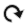
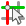
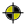
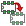
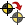
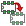
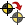

Manual de referencia
Copyright
Este documento esta protegido por Copyright © 2010 a 2015 de sus autores, mencionados a continuacion. Puede distribuirlo y/o modificarlo bajo los terminos de la GNU General Public License (http://www.gnu.org/licenses/gpl.html), version 3 o posterior, o la Creative Commons Attribution License (http : //creativecommons.org/licenses/by/3.0/), version 3.0 o posterior.
Todas las marcas mencionadas en esta guia pertenecen a sus legitimos propietarios.
Contribuidores
Jean-Pierre Charras, Fabrizio Tappero.
Traducción
Antonio Morales <antonio1010.mr@gmail.com>, 2015-2016 Iñigo Figuero <ifs@elektroquark.com>, 2016
Realimentacion
Por favor dirija cualquier reporte de fallo, sugerencia o nuevas versiones a:
-
Acerca de la documentacion de KiCad: https://github.com/KiCad/kicad-doc/issues
-
Acerca del software KiCad: https://bugs.launchpad.net/kicad
-
Acerca de la traduccion de la interfaz del software KiCad: https://github.com/KiCad/kicad-i18n/issues
Fecha de publicacion y version del software
17 de Marzo de 2014
1. Introduccion a Pcbnew
1.1. Descripcion
Pcbnew es una poderosa herramienta de software para placas de circuito impreso disponible para Linux, Microsoft Windows y sistemas operativos Apple OS X. Pcbnew se utiliza en asociacion con el programa generador de esquemas Eeschema para crear placas de circuito impreso.
Pcbnew gestiona librerias de huellas. Cada huella es un dibujo del componente fisico incluyendo su disposicion de pads en la placa de circuito). Las huellas necesarias se cargan automaticamente durante la lectura del fichero netlist. Cualquier cambio a la huella seleccionada o anotacion de la misma se pueden cambiar en el esquema y actualizarse en Pcbnew regenerando el fichero netlist y leyendolo en Pcbnew nuevo.
Pcbnew proporciona una herramienta de verificacion de reglas de diseno (DRC) que evita problemas con los margenes en pistas y pads, asi como impiden que se interconecten nodos que no estan conectados en el fichero netlist/esquema. Al utilizar el enrutador interactivo, este comprueba continuamente las reglas de diseno y ayudara automaticamente a trazar las pistas individuales.
Pcbnew ofrece la visualizacion del ratsnest, una rastro que conecta los pads de las huellas que estan conectados en el esquema. Estas conexiones se mueven dinamicamente a medida que se realizan los movimientos de las pista y de las huella.
Pcbnew tiene un enrutador automatico simple pero eficaz para ayudar en la produccion de la placa de circuito. La exportacion/importacion en formato SPECCTRA dns permite el uso de auto-enrutadores mas avanzados.
Pcbnew ofrece algunas opciones previstas especificamente para la produccion de circuitos de microondas de ultra alta frecuencia (como pads de forma trapezoidal y complejas, diseno automatico de bobinas en el circuito impreso, etc.).
1.2. Principales caracteristicas de diseno
La unidad mas pequena en Pcbnew es 1 nanometro. Todas las dimensiones se almacenan como nanometros enteros.
Pcbnew puede generar hasta 32 capas de cobre, 14 capas tecnicas (serigrafia, mascara de soldadura, adhesivos de componentes, de pasta de soldadura y cortes de borde), ademas de 4 capas auxiliares (dibujos y comentarios) y gestiona en tiempo real las indicaciones de pistas a falta de conexion (ratsnest).
La visualizacion de los elementos de la PCB (pistas, pads, texto, dibujos …) es personalizable:
-
Entre completa o modo contorno.
-
Con o sin los margenes de las pistas.
Para circuitos complejos, la visualizacion de capas, zonas y componentes se puede ocultar de manera selectiva para mayor claridad en la pantalla. Los nodos se pueden resaltar para proporcionar una visualizacion de alto contraste tambien.
Las huellas se pueden girar en cualquier angulo, con una resolucion de 0,1 grados.
Pcbnew incluye un editor de componentes que permite la edicion de huellas individuales que han estado en una PCB o editar una huella en una biblioteca.
El editor de componentes ofrece herramientas que ahorran mucho tiempo, como:
-
Numeracion rapida de pads simplemente arrastrando el raton sobre los pads en el orden que desee numerarlos.
-
Facil generacion de matrices rectangulares y circulares de pads para LGA/BGA o huellas circulares.
-
Alineacion semiautomatica de filas o columnas de pads.
Los pads de las huellas tienen una variedad de propiedades que pueden ajustarse. Los pads ser redondos, rectangulares, ovales o trapezoidales. Para los componentes de agujero pasante los taladros pueden estar desplazados dentro del pad, y ser redondos o una ranura. Los pads individualmente tambien se pueden girar y tienen mascara unica soldadura, nodo, o margen de mascara de pasta de soldadura.Los pads tambien pueden tener una conexion solida o una conexion de alivio termico para una fabricacion mas facil. Cualquier combinacion de pads unicos se puede colocar dentro de una huella.
Pcbnew genera facilmente todos los documentos necesarios para la produccion de:
-
Salidas de fabricacion:
-
Archivos para foto Plotters en formato GERBER RS274X.
-
Archivos para la taladrado en formato EXCELLON.
-
-
Archivos de trazado en HPGL, SVG y formato DXF.
-
Mapas de trazado y perforacion en formato PostScript.
-
Impresiones Locales.
1.3. Observaciones generales
Debido al grado de control necesario es muy recomendable utilizar un raton de 3 botones con Pcbnew. Muchas caracteristicas como encuadre y zoom requieren un raton de 3 botones.
En la nueva version de KiCad, Pcbnew ha visto introducidos grades cambios de mano de los desarrolladores del CERN. Esto incluye caracteristicas como un nuevo procesador (Modos de visualizacion OpenGL y Cairo), un enrutador con empuje interactivo de pistas, trazado diferencial y con forma meandro y puesta a punto, un editor de componentes re-elaborado, y muchas otras caracteristicas. Tenga en cuenta que la mayoria de estas nuevas caracteristicas Solo existen en los nuevos modos de visualizacion OpenGL y Cairo.
2. Instalacion
2.1. Instalacion del software
El procedimiento de instalacion se describe en la documentacion de KiCad.
2.2. Modificando la configuracion predeterminada
Un archivo de configuracion predeterminado kicad.pro se proporciona en kicad/share/template. Este archivo se utiliza como configuracion inicial para todos los nuevos proyectos.
Este archivo de configuracion se puede modificar para cambiar las bibliotecas a ser cargadas.
Para hacer esto:
-
Ejecute Pcbnew usando kicad o directamente. En Windows desde C:\kicad\bin\pcbnew.exe y en Linux puede ejecutar /usr/local/kicad/bin/kicad o /usr/local/kicad/bin/pcbnew si los binarios se encuentran en /usr/local/kicad/bin.
-
Seleccione Preferencias - Bibliotecas y Directorios.
-
Edite segun sea necesario.
-
Guarde la configuracion modificada (Guardar Cfg) a kicad/share/template/kicad.pro.
2.3. Gestion de Bibliotecas de Huellas: versiones anteriores
Puede acceder a la lista de inicializacion de bibliotecas en el menu Preferencias:

La siguiente imagen muestra la ventana que le permite definir la lista de bibliotecas de huellas:

Puede usar esto para anadir todas las bibliotecas que contengan las huellas necesarias para su proyecto. Tambien debe eliminar las bibliotecas no utilizados de los nuevos proyectos para prevenir conflictos con los nombres de las huella. Tenga en cuenta que hay un problema en la lista de bibliotecas de huellas cuando existen nombres duplicados de huella en mas de una biblioteca. Cuando esto ocurre, la huella se carga desde la primera biblioteca que se encuentra en la lista. Si esto es un problema (no se puede cargar la huella deseada), o bien cambie el orden de la lista de bibliotecas con los botones "Subir" y "Bajar" en la ventana anterior o asigne a la huella un nombre unico utilizando el editor de componentes.
2.4. Gestion de Bibliotecas de Huellas: repositorios .pretty
A partir de la version 4.0, Pcbnew utiliza una nueva implementacion de tabla de bibliotecas para gestionar las bibliotecas de huellas. La informacion en la seccion anterior ya no es valida. El gestor de la tabla de bibliotecas es accesible a traves de:
La siguiente imagen muestra la ventana de edicion de la tabla de bibliotecas de huellas que se puede abrir mediante la seleccion de la entrada "Administrador de Bibliotecas de Huellas" en el menu "Preferencias".

La tabla de bibliotecas de huellas se utiliza para asignar una biblioteca de componentes de cualquier tipo de biblioteca soportado a un alias de biblioteca. Este alias se utiliza para buscar las huellas en lugar del metodo anterior, que dependia de la ruta de la biblioteca para la busqueda. Esto permite a Pcbnew acceder a huellas con el mismo nombre en diferentes bibliotecas, asegurando que la huella correcta se carga desde la biblioteca adecuada. Tambien permite a Pcbnew soportar la carga de bibliotecas de diferentes editores de PCB como Eagle y gEDA.
2.4.1. Tabla Global de Bibliotecas de Huellas
La tabla global de bibliotecas de huellas contiene la lista de las bibliotecas que estan siempre disponibles sin importar el archivo de proyecto cargado en ese momento. La tabla se guarda en el archivo fp-lib-table en la carpeta de inicio del usuario. La ubicacion de esta carpeta es dependiente del sistema operativo.
2.4.2. Tabla de Bibliotecas de Huellas Especifica del Proyecto
La tabla de bibliotecas de huellas especifica del proyecto contiene la lista de las bibliotecas que estan disponibles especificamente para el archivo de proyecto cargado en ese momento. La tabla de bibliotecas de huellas especifica del proyecto solo se puede editar cuando se carga junto con el archivo de la placa del proyecto. Si no hay ningun archivo de proyecto cargado o no hay ningun archivo de tabla de bibliotecas de huellas en la ruta del proyecto, se crea una tabla vacia que puede ser editada y mas tarde guardada junto con el archivo de la placa.
2.4.3. Configuracion Inicial
La primera vez Pcbnew o CvPcb se ejecuta y no se encuentra la tabla global de huellas fp-lib-table en la carpeta de inicio del usuario, Pcbnew o CvPcb intentaran copiar el archivo de la tabla de huellas predeterminado fp-lib-table almacenado en el carpeta de plantillas de KiCad al archivo fp-lib-table en la carpeta de inicio del usuario. Si fp-lib-table no se puede encontrar, una tabla de bibliotecas de huellas vacia se creara en la carpeta de inicio del usuario. Si esto ocurre, el usuario puede copiar fp-lib-table manualmente o configurar la tabla a mano. La tabla de bibliotecas de huellas predeterminada incluye muchas de las bibliotecas de huellas estandar que se instalan como parte de KiCad.
2.4.4. Anadiendo Entradas a la Tabla
Para utilizar una biblioteca de huellas, primero debe agregarse a la tabla, ya sea a la global o a la especifica del proyecto. La tabla especifica de proyecto solo es aplicable cuando esta abierto un fichero netlist. Cada biblioteca debe tener un alias unico. Este no tiene por que estar relacionado en modo alguno con el nombre de archivo de la biblioteca o su ruta. El caracter dos puntos : no se puede utilizar en cualquier lugar del alias. Cada entrada de la biblioteca debe tener una ruta valida y/o nombre de archivo dependiendo del tipo de biblioteca. Las rutas pueden ser definidos como absolutas, relativas o por sustitucion de variable del entorno (vease la seccion siguiente). El tipo de biblioteca adecuado debe seleccionarse para que la biblioteca pueda ser leida correctamente. KiCad soporta actualmente la lectura de formatos KiCad Antigua, bibliotecas de componentes KiCad Pretty, Eagle y GEDA. Tambien hay un campo descripcion para agregar una descripcion de la entrada de la biblioteca. El campo opcion no se utiliza en este momento por lo que la adicion de opciones no tendra efecto cuando cargue las bibliotecas. Tenga en cuenta que no puede tener alias de biblioteca duplicados en la misma tabla. Sin embargo, puede tener un alias de biblioteca concreto tanto en la tabla de bibliotecas global como en la especifica del proyecto. La entrada de la tabla especifica de proyecto tendra prioridad sobre la entrada de la tabla global cuando existan nombres duplicados. Cuando las entradas se definen en la tabla especifica del proyecto, un archivo fp-lib-table conteniendo estas entradas se guardara en la carpeta del fichero netlist abierto actualmente.
2.4.5. Sustitucion de Variables del Entorno
Una de las caracteristicas mas potentes de las tablas de bibliotecas de huellas es la sustitucion de variables del entorno. Esto le permite definir rutas personalizadas, donde se almacenan sus bibliotecas, en variables del entorno. La sustitucion de las variables del entorno se consigue mediante la sintaxis ${ENV_VAR_NAME} en la ruta de la biblioteca de huellas. Por defecto, en tiempo de ejecucion KiCad define la variable del entorno KIPRJMOD. Esta apunta siempre al directorio actual del proyecto y no se puede modificar. Puede anular KISYSMOD definiendola usted mismo, lo que le permite sustituir sus propias bibliotecas en lugar de las bibliotecas por defecto de KiCad Cuando se carga una placa, Pcbnew define tambien KIPRJMOD utilizando la ruta del archivo de la placa. Esto le permite crear bibliotecas en la ruta del proyecto sin tener que definir la ruta absoluta a la biblioteca en la tabla de bibliotecas de huellas especificas del proyecto.
2.4.6. Usando el Plugin para GitHub
El de GitHub es un plugin especial que proporciona una interfaz para acceso de solo lectura a un repositorio GitHub remoto consistente en un directorio .pretty (Pretty es el nombre del formato de archivo de huellas para KiCad) de huellas, y opcionalmente proporciona soporte para "Copiar Al Escribir" (CAE) huellas leidas desde el repositorio de GitHub y guardarlas localmente. Por tanto, el plugin para "Git Hub" es para acceso de solo lectura a bibliotecas de componentes remotas tipo Pretty en https://github.com. Para agregar una entrada de GitHub a la tabla de bibliotecas de huellas la “Ruta de las Bibliotecas” en la fila de la tabla de bibliotecas de huellas debe ajustarse a una URL de GitHub valida.
Por ejemplo:
https://github.com/liftoff-sr/pretty_footprints
Por lo general las URLs de GitHub tienen la forma:
https://github.com/nombre_de_usuario/nombre_del_repositorio
El "Tipo de Plugin" se debe ajustarse a "Github". Para habilitar la caracteristica de "Copiar Al Escribir" la opcion allow_pretty_writing_to_this_dir se debe agregarse a los ajustes de "opciones" de la entrada en la tabla bibliotecas de huellas. Esta opcion es la "ruta de la biblioteca" para el almacenamiento local de las copias modificadas de las huellas leidas desde el repositorio GitHub. Las huellas guardadas en esta ruta se combinan con las de solo lectura del repositorio de GitHub para crear la biblioteca de huella. Si esta opcion no se especifica, entonces la biblioteca GitHub es de solo lectura. Si la opcion esta presente para una biblioteca GitHub, entonces cualquier escritura en esta biblioteca hibrida ira al directorio *.pretty local. Tenga en cuenta que la parte residente en github.com de esta biblioteca hibrida es siempre de solo lectura, lo que significa que no se puede borrar nada ni modificar ninguna huella en el repositorio de GitHub especificado directamente. El tipo de biblioteca agregada sigue siendo de tipo "Github" a todos los efectos, pero consiste en una parte local de lectura/escritura y una remota de solo lectura.
La siguiente tabla muestra una entrada de la tabla de bibliotecas de huellas sin la opcion allow_pretty_writing_to_this_dir:
| Nickname | Library Path | Plugin Type | Options | Descript. |
|---|---|---|---|---|
github |
Github |
Liftoff’s GH footprints |
La siguiente tabla muestra una entrada de tabla bibliotecas de huellas con la opcion CAE especificada. Observe el uso de la variable del entorno $\{HOME\} solo como ejemplo. El directorio github.pretty es alojado en la ruta ${HOME}/pretty/. Cada vez que utilice la opcion allow_pretty_writing_to_this_dir, tendra que crear ese directorio manualmente con antelacion y este debe terminar con la extension `.pretty `.
| Nickname | Library Path | Plugin Type | Options | Description |
|---|---|---|---|---|
github |
Github |
Liftoff’s GH footprints |
La carga de huellas siempre dara prioridad a las huellas locales que se encuentran en la ruta dada por la opcion allow_pretty_writing_to_this_dir. Una vez que haya guardado una huella al directorio local de la biblioteca CAE guardando una huella desde el editor de huellas, no se actualizaran las modificaciones de esta en el repositorio de GitHub si existe una huella con el mismo nombre en la copia local.
Mantenga siempre un directorio .pretty local distinto para cada biblioteca de GitHub, nunca los combine referenciandolos al mismo directorio local mas de una vez. Ademas, no utilice el mismo directorio CAE (.pretty) en una entrada de la tabla bibliotecas de huellas. Esto probablemente crearia un desastre. El valor de la opcion allow_pretty_writing_to_this_dir ampliara cualquier variable del entorno usando la notacion ${} para crear la ruta de acceso de la misma manera que en el ajuste de la "Ruta de la biblioteca".
?Cual es el interes de CAE? El de acelerar el intercambio de huellas. Si envia por correo electronico periodicamente modificaciones en las huellas .pretty CAE al mantenedor del repositorio en GitHub, puede ayudar a actualizar la copia en GitHub. Envie simplemente por correo electronico los archivos *.kicad_mod individuales que se encuentran en sus directorios CAE al mantenedor del repositorio GitHub. Despues de haber recibido la confirmacion de que se han fusionado los cambios, puede eliminar el archivo CAE y la huella actualizada de la parte de solo lectura de la biblioteca de GitHub se descargara y actualizara. El objetivo debe ser mantener el conjunto de archivos CAE lo mas pequeno posible, contribuyendo con frecuencia a las copias principales compartidas en https://github.com.
Finalmente, puede utilizar Nginx como una memoria cache del servidor github para acelerar la carga de huellas. Puede instalarse localmente o en un servidor de red. Hay un ejemplo de configuracion en las fuentes de KiCad en Pcbnew/github/nginx.conf. La forma mas facil de conseguirlo es sobrescribir el fichero nginx.conf defecto con este y export KIGITHUB=http://my_server:54321/KiCad, donde` my_server` es la direccion IP o el nombre del dominio de la maquina ejecutando nginx.
2.4.7. Uso de Patrones
Las bibliotecas de huellas se pueden definir tanto globalmente como especificamente para el proyecto cargado en ese momento. Librerias de componentes definidos en la tabla global del usuario estan siempre disponibles y se almacenan en el archivo fp-lib-table en la carpeta de inicio del usuario. Las bibliotecas de huellas globales siempre son accesibles incluso cuando no hay ningun archivo netlist abierto. La tabla de huellas especificas del proyecto esta activa solo para el archivo netlist abierto en ese momento. La tabla de bibliotecas de huellas especifica del proyecto se guarda en el archivo fp-lib-table en la ruta del archivo netlist abierto actualmente. Usted es libre de definir las bibliotecas en cualquier tabla.
Existen ventajas y desventajas de cada metodo:
-
Puede definir todas sus bibliotecas en la tabla global de lo que significa que siempre estaran disponibles cuando las necesite.
-
La desventaja de esto es que puede tener que buscar a traves de una gran cantidad de bibliotecas para encontrar la huella que busca.
-
-
Puede definir todas las bibliotecas de forma especifica para proyecto.
-
La ventaja de esto es que usted solo tendra que definir las bibliotecas que realmente necesita para el proyecto lo que reduce la busquedas posteriores.
-
La desventaja es que siempre tiene que recordar agregar cada biblioteca de huellas que necesite para cada proyecto.
-
-
Tambien puede definir bibliotecas de huellas tanto global como para el proyecto concreto.
Un patron de uso seria definir las bibliotecas mas utilizados a nivel global y la bibliotecas que solo se requieran para el proyecto en la tabla de bibliotecas especifica del proyecto. No existe ninguna restriccion sobre como definir sus bibliotecas.
3. Operaciones generales
3.1. Barras de herramientas y comandos
En Pcbnew es posible ejecutar comandos utilizando diversos medios:
-
Menu de texto en la parte superior de la ventana principal.
-
Barra de herramientas superior.
-
Barra de herramientas del lado derecho.
-
Barra de herramientas del lado izquierdo.
-
Botones de raton (menu de opciones). Especificamente:
-
El boton derecho del raton despliega un menu contextual cuyo contenido depende del elemento sobre el que se situe el raton.
-
-
Teclado (teclas de funcion F1,` F2`, F3,` F4`, Shift,Delete, +, -,Pagina Up, Pagina Down y Barra espaciadora). La tecla Escape general cancela la operacion en curso.
La captura de pantalla siguiente muestra algunos de los posibles accesos a estas operaciones:

3.2. Comandos del raton
3.2.1. Comandos basicos
-
Boton izquierdo
-
Un solo clic muestra las caracteristicas de la huella o el texto bajo el cursor en la barra de estado inferior.
-
Mediante doble clic se muestra el editor (si el elemento es editable) del elemento bajo el cursor.
-
-
Boton central/rueda
-
Zoom rapido y algunos comandos en el administrador de capas.
-
Mantenga pulsado el boton central y dibuje un rectangulo para hacer un zoom sobre el area encerrada. La rotacion de la rueda del raton permitira hacer aproximar y alejar el nivel de zoom.
-
-
Boton derecho
-
Despliega un menu contextual
-
3.2.2. Operaciones sobre bloques
Operaciones para mover, reflejar (espejo), copiar, rotar y borrar un bloque estan disponibles a traves del menu contextual. Ademas, el zoom puede ajustarse a la zona descrita por el bloque.
El marco del bloque se traza moviendo el raton mientras se mantiene pulsado el boton izquierdo del mismo. La operacion se ejecuta cuando se suelta el boton.
Manteniendo pulsado una de las teclas rapidos Shift, Ctrl, o ambas teclas Shift y Ctrl simultaneamente, mientras que el bloque se dibuja, la operacion reflejar, rotar o eliminar se selecciona automaticamente como se muestra en la siguiente tabla:
| Accion | Efecto |
|---|---|
Boton izquierdo del raton pulsado |
Trazar marco para mover el bloque |
Shift + boton izquierdo del raton pulsado |
Trazar marco para invertir el bloque |
Ctrl + boton izquierdo del raton pulsado |
Trazar marco para rotar el bloque 90 ° |
Shift + Ctrl + boton izquierdo del raton pulsado |
Trazar marco para borrar el bloque |
Boton central del raton pulsado |
Trazar marco para ajustar el zoom al bloque |
Cuando mueve un bloque:
-
Mueva el bloque a la nueva posicion y accione el boton izquierdo del raton para colocar los elementos.
-
Para cancelar la operacion use el boton derecho del raton y seleccione Cancelar Bloque en el menu (o pulse la tecla Esc).
Alternativamente, si no se pulsa ninguna tecla cuando dibuja el bloque use el boton derecho del raton para mostrar el menu contextual y seleccione la operacion requerida.
Para cada operacion de bloque una ventana de seleccion permite que la accion se limite solo a algunos elementos.
3.3. Seleccion del tamano de la rejilla
Durante la disposicion de elementos el cursor se mueve sobre una rejilla. La rejilla puede activarse o desactivarse mediante un icono en la barra de herramientas del lado izquierdo.
Cualquiera de los tamanos de rejilla predefinidos, o una rejilla definida por el usuario, puede ser elegida mediante el menu contextual, o el selector desplegable en la barra de herramientas en la parte superior de la ventana. El tamano de la rejilla definida por el usuario se ajusta la opcion de la barra de menus Dimensiones → Cuadricula.
3.4. Ajuste del nivel de zoom
El nivel de zoom se puede cambiar utilizando cualquiera de los metodos siguientes:
-
Abra el menu contextual (con el boton derecho del raton) y seleccione el zoom deseado.
-
Utilice las siguientes teclas de funcion:
-
F1: Ampliar (zoom hacia adentro)
-
F2: Reducir (zoom hacia afuera)
-
F3: Redibuja la pantalla
-
F4: Centra la vista en la posicion actual del cursor
-
-
Gire la rueda del raton.
-
Mantenga pulsado el boton central del raton y dibuje un rectangulo para hacer un zoom a la zona descrita.
3.5. Mostrando las coordenadas del cursor
Las coordenadas del cursor se muestran en pulgadas o milimetros segun se seleccione el icono In o mm en la barra de herramientas de la parte izquierda.
Indistintamente de la unidad seleccionada Pcbnew siempre funciona con una precision de 1/10,000 de pulgada.
La barra de estado en la parte inferior de la pantalla muestra:
-
El ajuste de zoom actual.
-
La posicion absoluta del cursor.
-
La posicion relativa del cursor. Tenga en cuenta las coordenadas relativas (x, y) pueden establecerse a (0,0) en cualquier posicion presionando la barra espaciadora. La posicion del cursor se visualiza en relacion con este nuevo dato.
Ademas, la posicion relativa del cursor puede visualizarse utilizando coordenadas polares (radio + angulo). Esto puede activarse y desactivarse mediante el icono en la barra de herramientas del lado izquierdo.

3.6. Comandos del teclado - teclas rapidas
Muchos comandos son accesibles directamente desde el teclado. Las teclas pueden ser tanto mayusculas como minusculas. La mayoria de las teclas de acceso rapido se muestran en los menus. Algunas teclas de acceso rapido que no aparecen son:
-
Borrar: elimina una huella o una pista. (Disponible solo si el modo de huella o el modo pista estan activos)
-
V: si esta activa la herramienta pista cambia de capa activa o coloca una via, si el trazado de una pista esta en curso.
-
+ y -: selecciona la capa siguiente o anterior.
-
?: muestra la lista de todas las teclas rapidas.
-
Barra espaciadora: ajusta el cero para las coordenadas relativas.
3.7. Operaciones sobre bloques
Operaciones para mover, reflejar (espejo), copiar, rotar y borrar un bloque estan disponibles a traves del menu contextual. Ademas, el zoom puede ajustarse a la zona descrita por el bloque.
El marco del bloque se traza moviendo el raton mientras se mantiene pulsado el boton izquierdo del mismo. La operacion se ejecuta cuando se suelta el boton.
Manteniendo pulsado una de las teclas rapidos Shift, Ctrl, o ambas teclas Shift y Ctrl simultaneamente, mientras que el bloque se dibuja, la operacion reflejar, rotar o eliminar se selecciona automaticamente como se muestra en la siguiente tabla:
| Accion | Efecto |
|---|---|
Boton izquierdo del raton pulsado |
Mueve el bloque |
Shift + boton izquierdo del raton pulsado |
Refleja (espejo) el bloque |
Ctrl + boton izquierdo del raton pulsado |
Rota el bloque 90 ° |
Shift + Ctrl + boton izquierdo del raton pulsado |
Borra el bloque |
Alt + boton izquierdo del raton pulsado |
Copia el bloque |
Cuando se crea un bloque se muestra una ventana y pueden elegirse los elementos afectados por el bloque.
Cualquiera de los comandos anteriores puede ser cancelado a traves del menu contextual o presionando la tecla Escape (Esc).

3.8. Unidades usadas en las ventanas
Unidades utilizadas para mostrar los valores de las dimensiones son pulgadas
y mm. La unidad deseada se puede seleccionar pulsando el icono situado en la
barra del lado izquierdo:

 Sin embargo uno puede indicar la unidad
utilizada para definir un valor, cuando este es escrito.
Sin embargo uno puede indicar la unidad
utilizada para definir un valor, cuando este es escrito.
Las unidades aceptadas son:
1 in |
1 pulgada |
1 " |
1 pulgada |
25 th |
25 milesimas de pulgada |
25 mi |
25 mils, igual que thou |
6 mm |
6 mm |
Las reglas son:
-
Se aceptan espacios entre el numero y la unidad.
-
Solo son significativas las dos primeras letras.
-
En paises que usan un separador de decimales alternativo al punto, el punto (.) puede usarse tambien. Asi 1,5 y 1.5 significan lo mismo en Frances.
3.9. Barra de menu superior
La barra de menu superior permite acceder a los ficheros (cargarlos y guardarlos), opciones de configuracion, imprimir, trazar y los ficheros de ayuda.

3.9.1. El menu Archivo
El menu Archivo le permite cargar y guardar los ficheros de circuito impreso, asi como imprimir y trazar la PCB. Permite exportar (con el formato GenCAD 1.4) el circuito para su uso con comprobadores automaticos.
3.9.2. Menu Editar
Permite algunas acciones de edicion global:

3.9.3. Menu Ver

Opciones de zoom y mostrar la placa en 3D.
Visor 3D
Abre el visor 3D. Aqui se muestra un ejemplo:

Cambiar lienzo
Permite cambiar el tipo de lienzo.
-
predeterminado
-
OpenGL
-
Cairo
3.9.4. Menu Anadir
Mismas funciones que el boton derecho de raton.

3.9.5. Menu Enrutar
Funciones de trazado de pistas

3.9.6. Menu Preferencias

Permite:
-
Seleccionar las bibliotecas de huellas.
-
Ocultar/Mostrar el gestor de capas (seleccion de colores para la visualizacion de las capas y otros elementos. Tambien permite habilitar o deshabilitar la visualizacion de elementos).
-
La gestion de opciones generales (unidades, etc.).
-
La gestion de otras opciones de visualizacion.
-
Crear, editar (y re-leer) el fichero de teclas rapidas.
3.9.7. Menu Dimensiones

Un menu importante. Permite ajustar:
-
El tamano de la rejilla de usuario
-
Tamano de los textos y en ancho de la linea para los dibujos.
-
Dimensiones y caracteristicas de los pads.
-
Ajustes los valores globales para la mascara de soldadura y mascara de pasta de soldadura
3.9.8. Menu Herramientas
3.9.9. Menu Reglas de Diseno

Proporciona acceso a 2 ventanas:
-
Ajustes de Reglas de Diseno (tamanos de pistas y vias, margen).
-
Configurar Capas (numero, habilitacion y nombres de capa)
3.9.10. Menu Ayuda
Proporciona acceso a los manuales del usuario y el menu de informacion de la version (Acerca de Pcbnew).
3.10. Uso de los iconos de la barra de herramientas superior
Esta barra de herramientas permite acceder a las principales funciones de Pcbnew.
|
Crea una nueva placa de circuito. |
|
Abre una placa de circuito previamente creada. |
|
Guarda la placa de circuito. |
|
Selecciona el tamano de pagina y modifica los textos del cajetin. |
|
Abre el Editor de Huellas para editar una biblioteca o una huella de la placa. |
|
Abre el Visor de Huellas para mostrar una biblioteca o una huella de la placa. |
|
Deshacer/Rehacer los ultimos comandos (10 niveles) |
|
Muestra el menu imprimir. |
|
Muestra el menu trazar. |
|
Zoom hacia adentro y Zoom hacia afuera (relativo al centro de la pantalla). |
 |
Redibuja la pantalla |
|
Ajusta el zoom a la placa |
|
Busca una huella o texto. |
|
Operaciones sobre el Netlist (seleccion, lectura, testeo y compilacion). |
|
DRC (Comprobador de Reglas de Diseno): Comprueba automaticamente todas las pistas. |
|
Selecciona la capa de trabajo. |
|
Selecciona un par de capas (para las vias) |
|
Modo Huella: Cuando esta activo habilita las opciones tipo huella en el menu contextual. |
|
Modo Trazado de pistas: Cuando esta activo habilita las opciones de trazado de pistas en el menu contextual |
|
Acceso directo al enrutador Freerouter |
|
Muestra/Oculta la consola de Python |


3.10.1. Barra de herramientas auxiliar
|
Selecciona el grosor de pista en uso. |
|
Selecciona el tamano de via en uso. |
|
Ancho de pista automatico: Si esta habilitado cuando se crea una nueva pista, al comenzar sobre una pista existente, el ancho de la nueva pista se ajusta al ancho de la pista anterior. |
|
Selecciona el tamano de la rejilla. |
|
Selecciona el nivel de zoom. |


3.11. Barra de herramientas lateral derecha
Esta barra de herramientas permite acceder a las herramientas de edicion para modificar la PCB mostrada en Pcbnew.
|
|
Seleccionar el modo estandar del raton. |
 |
Resaltar el nodo seleccionado al hacer clic en una pista o pad. |
|
|
Mostrar el ratsnest local (Pad o Huella). |
|
|
Anadir una huella desde una biblioteca. |
|
|
Insertar pistas y vias. |
|
|
Insertar zonas (planos de cobre). |
|
|
Insertar zonas de exclusion (sobre las capas de cobre). |
|
|
Dibujar Lineas sobre las capas tecnicas (capas no metalicas). |
|
|
Dibujar Circulos sobre las capas tecnicas (capas no metalicas). |
|
|
Dibujar Arcos sobre las capas tecnicas (capas no metalicas). |
|
|
Colocar elementos de texto. |
|
|
Dibujar Dimensiones en capas tecnicas (capas no metalicas). |
|
 |
Dibujar Marcas de Alineamiento (apareceran en todas las capas). |
|
|
Borrar el elemento apuntado por el cursor Nota: Durante la operacion de borrado, si varios elementos superpuestos son apuntados, la prioridad se concede al mas pequeno (En orden decreciente de prioridad pistas, texto, huellas) La funcion "Deshacer" de la barra de herramientas superior le permite cancelar el ultimo elemento Borrado. |
|
|
Ajuste de Offset para los archivos de taladrado y colocacion. |
|
|
Origen de la rejilla. (offset de rejilla). Util durante la edicion y colocacion de huellas. Puede tambien ajustarse en el menu Dimensiones/Cuadricula. |

-
Colocacion de huellas, pistas, zonas de cobre, textos, etc.
-
Resaltado de nodos.
-
Creacion de notas, elementos graficos, etc.
-
Borrar elementos.
3.12. Barra de herramientas lateral izquierda
La barra de herramientas lateral izquierda provee opciones de visualizacion y control que afectan al interfaz de Pcbnew
|
|
Enciende/Apaga el DRC (Comprobador de Reglas de Diseno). Cuidado: Cuando el DRC esta apagado pueden realizarse conexiones incorrectas. |
|
Enciende/Apaga la rejilla. Nota: Una rejilla pequena puede no representarse a menos que se aproxime suficientemente con el zoom |
|
|
Enciende/Apaga la representacion en formato polar de las coordenadas relativas en la barra de estado. |
|
|
Ajusta el sistema de coordenadas y dimensiones a pulgadas o milimetros. |
|
|
Cambia la forma del cursor. |
|
|
Visualiza los trazos del ratsnest (conexiones incompletas entre huellas). |
|
|
Muestra los ratsnest de las huellas dinamicamente durante el movimiento de las mismas. |
|
|
Habilita/Deshabilita el borrado de una pista cuando esta es re-dibujada. |
|
|
Muestras las areas rellenas en las zonas. |
|
|
No muestra las areas rellenas en las zonas. |
|
|
Muestra solo el contorno de las areas rellenas en las zonas. |
|
|
Enciende/Apaga la visualizacion de los pads en modo contorno. |
|
|
Enciende/Apaga la visualizacion de las vias en modo contorno. |
|
|
Enciende/Apaga la visualizacion de las pistas en modo contorno.. |
|
|
Enciende/Apaga el modo alto contraste. En este modo la capa activa se muestra con normalidad, todas las otras capas se muestran en gris. Util para trabajar en circuitos multi-capa. |
|
|
Muestra/Oculta el gestor de capas. |
|
|
Acceso a la barra de herramientas de microondas. Bajo desarrollo. |

3.13. Menus contextuales y edicion rapida
El boton derecho del raton abre un menu contextual. Su contenido depende del elemento senalado por el cursor.
Esto le da acceso inmediato a:
-
Cambio de la visualizacion (centrar pantalla en el cursor, acercar o alejar el zoom o seleccionar su nivel).
-
Ajustar el tamano de la rejilla.
-
Ademas un clic derecho sobre un elemento le permite editar los parametros de los elementos mas comunmente modificados.
Las imagenes siguientes muestran los distintos menus contextuales.
3.14. Modos disponibles
Hay 3 modos cuando se utilizan menus contextuales. En los menus contextuales estos modos anaden o eliminan algunos ordenes especificas.
|
Modo normal |
|
Modo huella |
|
Modo pistas |
3.14.1. Modo normal
-
Menu contextual sin elemento seleccionado:

-
Menu contextual con una pista seleccionada:

-
Menu contextual con una huella seleccionada:
3.14.2. Modo huella
Algunos casos en el Modo Huella (
 enabled)
enabled)
-
Menu contextual sin elemento seleccionado:

-
Menu contextual con una pista seleccionada:

-
Menu contextual con una huella seleccionada:

3.14.3. Modo pistas
Algunos casos en Modo Pista (
 enabled)
enabled)
-
Menu contextual sin elemento seleccionado:

-
Menu contextual con una pista seleccionada:

-
Menu contextual con una huella seleccionada:

4. Implementacion del Esquema
4.1. Vinculando un esquema con la placa de circuito impreso
En terminos generales, una hoja de esquema esta ligada a su placa de circuito impreso por medio del archivo netlist, que normalmente es generado por el editor de esquemas utilizado para hacer el esquema. Pcbnew acepta archivos netlist realizados con Eeschema o Orcad PCB 2. Al archivo netlist, generado a partir del esquema les suele faltar las huellas que corresponden a los diversos componentes. En consecuencia es necesaria una etapa intermedia. Durante este proceso intermedio se lleva a cabo la asociacion de los componentes con las huellas. En KiCad, CvPcb se utiliza para crear esta asociacion y se genera un archivo llamado *.cmp. Cvpcb tambien actualiza el archivo netlist usando esta informacion.
CvPcb tambien puede emitir un *.stf que se puede reenviar al esquema anotando el archivo con el campo F2 para cada componente, ahorrando la tarea de re-asignacion de huellas en cada pasada de edicion del esquema. En Eeschema la copia de un componente tambien copia la asignacion de la huella y establece el campo referencia como no asignado para su posterior anotacion.
Pcbnew lee el archivo netlist .net modificado y, si existe, el archivo .cmp. En el caso de que una huella se cambie directamente en Pcbnew, el archivo .cmp se actualiza automaticamente evitando tener que ejecutar CvPcb de nuevo.
Consulte la figura en el manual "Comenzando en KiCad" en la seccion Flujo de trabajo en KiCad que ilustra el flujo de trabajo de KiCad y como se obtienen los archivos intermedios y son utilizados por las diferentes herramientas software que componen KiCad.
4.2. Procedimiento para crear una placa de circuito impreso
Despues de haber creado su esquema con Eeschema:
-
Generar el fichero netlist utilizando Eeschema.
-
Asigne a cada componente de la lista de redes la huella correspondiente que se utilizara en el circuito impreso mediante CvPcb.
-
Ejecute Pcbnew y lea el Netlist modificado. Esto tambien leera el archivo con las selecciones de las huellas.
Pcbnew cargara automaticamente todas las huellas necesarias.Ahora, pueden colocarse las huellas de forma manual o automatica en la placa y pueden trazarse las pistas.
4.3. Procedimiento para la actualizacion de una placa de circuito impreso
Si se modifica el esquema (despues de que se haya generado una placa de circuito impreso), deben repetirse los siguientes pasos:
-
Generar un nuevo archivo netlist utilizando Eeschema.
-
Si los cambios en el esquema implican nuevos componentes, las huellas correspondientes deben asignarse utilizando CvPcb.
-
Ejecute Pcbnew y vuelva a leer el fichero netlist modificado (esto tambien vuelve a leer el archivo con las selecciones de las huella).
Pcbnew entonces carga automaticamente las nuevas huellas, anade las nuevas conexiones y quita las conexiones redundantes. Este proceso se denomina anotacion hacia adelante y es un procedimiento muy comun cuando una PCB es realizada y actualizada.
4.4. Leyendo el archivo netlist - cargando las huellas
4.4.1. Ventana
Accesible desde el icono


4.4.2. Opciones disponibles
Seleccion de Huellas |
Enlace entre componente y su huella correspondiente en la placa: El enlace normal es Referencia (opcion habitual) Puede usarse Marca de tiempo tras re-anotar el esquema, si el anterior anotado se modifico (opcion especial) |
Cambiar Huella: |
Si una huella ha cambiado en el netlist: mantiene la huella anterior cambiar a la nueva. |
Pistas sin conectar |
Mantiene todas las pistas existentes, o borra las erroneas |
Huellas Extra |
Elimina las huellas que estan en la placa, pero no en el netlist. Las huellas con el atributo "bloqueada", no se eliminaran. |
Nodos con un solo Pad |
Elimina los nodos con un solo pad. |
4.4.3. Cargando nuevas huellas
En el modo de trabajo GAL, cuando se encuentran huellas nuevas en el archivo de lista de redes, se cargaran, extenderan y estaran preparadas para ser colocadas como un grupo donde se desee.
En el modo de trabajo "legacy", cuando se encuentran huellas nuevas en el archivo de lista de redes, se cargaran automaticamente y se colocaran en la coordenada (0,0).

Las huellas nuevas se pueden mover y ordenar una a una. Una manera mejor es moverlas de forma automatica (desapilar):
Active el modo huella (
 )
)
Mueva el cursor a un area adecuada (libre de componentes), y haga clic con el boton derecho:

-
Colocar automaticamente las nuevas huellas, si ya existe una placa con huellas existentes.
-
Colocar automaticamente todas las huellas, para la primera vez (cuando crea la placa).
La siguiente captura de pantalla muestra los resultados.

5. Capas
5.1. Introduccion
Pcbnew puede trabajar con 50 capas diferentes:
-
Entre 1 y 32 capas de cobre para el trazado de las pistas.
-
14 capas tecnicas de proposito definido:
-
12 capas emparejadas (Frontal/Trasera): Adhesivo, Pasta de soldadura, Serigrafia, Mascara de soldadura, Capa de area, Fabricacion
-
2 capas independientes: Perimetro, Margen
-
-
4 capas auxiliares que pueden utilizarse de forma libre: Comentarios, E.C.O. 1, E.C.O. 2, Graficos
5.2. Creacion de capas
Para abrir Configurar capas desde la barra de menu, seleccione Reglas de diseno → Configurar capas.
El numero de capas de cobre, sus nombres y funciones se establecen aqui. Las capas tecnicas no utilizados pueden desactivarse.

5.3. Descripcion de capa
5.3.1. Capas de cobre
Las capas de cobre son las capas de trabajo habituales utilizadas para colocar y organizar las pistas. Los numeros de capa comienzan por 0 (la primera capa de cobre, frontal) y terminan en 31 (trasera). Como los componentes no pueden colocarse en las capas intermedias, solo la 0 y la 31 son capas de componentes.
El nombre de cualquier capa de cobre es editable. Las capas de cobre tienen un atributo de funcion util cuando se utiliza el enrutador externo Freerouter. Ejemplos de nombres de capas por defecto son F.Cu y In0 para la capa numero 0.
5.3.2. Capas tecnicas emparejadas
Hay 12 capas tecnicas emparejadas: una frontal y otra trasera. Puede reconocedrlas por el prefijo "F." o "B." en sus nombres. Los elementos que conforman una huella (pad, dibujo, texto) en una de esas capas son automaticamente reflejados y movidos a la capa complementaria cuando una huella se voltea.
Las capas tecnicas emparejadas son:
- Adhesivo (F.Adhes y B.Adhes)
-
Se utilizan para la aplicacion de adhesivo para pegar los componentes SMD a la placa, normalmente antes de la soldadura por ola.
- Pasta de soldadura (F.Paste y B.Paste)
-
Se utilizan para producir una mascara que permita colocar pasta de soldadura sobre los pads de los componentes de montaje superficial, normalmente antes del proceso de soldadura por reflujo. Normalmente solo componentes de montaje superficial ocupan estas capas.
- Serigrafia (F.SilkS y B.SilkS)
-
Son las capas donde apareces los graficos de los componentes. Ahi es donde se dibujan elementos como la polaridad de los componentes, el indicador del primer pin, referencias para el montaje, …
- Mascara de soldadura (F.Mask y B.Mask)
-
Estas definen las mascaras de soldadura. Todos los pads deben aparecer en una de estas capas (SMT) o en las dos (pasantes) para prevenir que se aplique barniz sobre los pads.
- Areas de huellas (F.CrtYd y B.CrtYd)
-
Utilizadas para mostrar cuanto espacio fisico ocupa un componente en la placa.
- Fabricacion (F.Fab y B.Fab)
-
Ensamblaje de los componentes (?).
5.3.3. Capas tecnicas independientes
- Perimetro
-
Esta capa esta reservada par el dibujo del contorno de la placa. Cualquier elemento (grafico, texto, …) colocado sobre esta capa aparece sobre todas las demas. Use esta capa solo para dibujar el borde y recortes de la placa.
- Margen
-
Board’s edge setback outline (?).
5.3.4. Capas de uso general
Estas capas son para cualquier uso. Pueden usarse para texto como instrucciones de ensamblado o conexionado, o graficos constructivos, para ser usadas para crear un archivo para maquinas de ensamblado.
-
Comentarios
-
Configurable por el usuario 1
-
Configurable por el usuario 2
-
Dibujos
5.4. Seleccion de la capa activa
La seleccion de la capa de trabajo puede realizarse de distintas maneras:
-
Usando la barra de herramientas lateral derecha (gestor de capas).
-
Usando la barra de herramientas superior.
-
Mediante el menu contextual (activado con el boton derecho del raton).
-
Usando las teclas + y - (funciona solo sobre las capas de cobre).
-
Mediante teclas rapidas.
5.4.1. Seleccion usando el gestor de capas

5.4.2. Seleccion utilizando la barra de herramientas superior

Esta elige directamente la capa de trabajo.
Se muestran teclas de acceso rapido para seleccionar la capa de trabajo.
5.4.3. Seleccion mediante el menu contextual
El menu contextual abre una ventana de menu que permite elegir la capa de trabajo.

5.5. Seleccion de las capas para Vias
Si el icono Agregar pistas y Vias esta seleccionado en la barra de herramientas de la derecha, el menu contextual ofrece la opcion de cambiar el par de capas utilizada para insertar una via:

Esta seleccion abre una ventana de menu que permite elegir entre que dos capas se conmutara al situar las vias.

Cuando se coloca una via en capa de trabajo (activa) se cambia automaticamente a la capa alternativa de la pareja de capas elegida para las vias.
Tambien se puede cambiar a otra capa activa mediante las teclas de acceso rapido, y si una pista esta en curso, se insertara una via.
5.6. Usando el modo de alto contraste
Se entra en este modo cuando se activa la herramienta (en la barra de
herramientas lateral izquierda):

Cuando se utiliza este modo, la capa activa se muestra en modo normal, pero todas las demas capas se muestran en color gris.
Hay dos casos utiles:
5.6.1. Capas de cobre en el modo de alto contraste
Cuando una placa utiliza mas de cuatro capas, esta opcion permite que la capa de cobre activo que se ve mas facilmente:
Modo Normal (capa de cobre inferior activa):

Modo de alto contraste (capa de cobre inferior activa):

5.6.2. Capas tecnicas
El otro caso es cuando es necesario examinar las capas de pasta de soldadura y capas de mascara de soldadura que por lo general no son mostradas.
Se muestran las mascaras sobre los pads si este modo esta activo.
Modo Normal (capa de mascara de soldadura frontal activa):
Modo de alto contraste (capa de mascara de soldadura frontal activa):

6. Crear y modificar una placa
6.1. Crear una placa
6.1.1. Dibujando el cortorno de la placa
Por lo general, es una buena idea definir al principio el contorno de la placa. El contorno se dibuja como una secuencia de segmentos de linea. Seleccione Edge.Cuts como la capa activa y use de la herramienta Anadir linea grafica o poligono para trazar el borde, haciendo clic en la posicion de cada vertice y doble clic para terminar el contorno. Las placas de circuito normalmente tienen unas dimensiones muy precisas, por lo que puede ser necesario utilizar la visualizacion de las coordenadas del cursor mientras traza el contorno. Recuerde que las coordenadas relativas pueden ser puestas a cero en cualquier momento usando la barra espaciadora, y que las unidades de la pantalla tambien se puede activar mediante "Ctrl-U '. Las coordenadas relativas permiten un trazado muy preciso. Es posible dibujar un contorno circular (o en forma de arco):
-
Seleccione la herramienta Anadir circulo grafico o Agregar arco grafico herramienta
-
Haga clic para definir el centro del circulo
-
Ajuste el radio moviendo el raton
-
Finalice haciendo clic de nuevo
|
Nota
|
El ancho del contorno puede ajustarse en el menu Parametros (la anchura recomendada es de 150 en 1/10 milesimas de pulgada) o a traves del menu Opciones, pero esto no sera visible a menos que los graficos se muestren en un modo distinto del modo esquematizado. |
El contorno resultante podria ser algo parecido a esto:

6.1.2. Usando dibujos DXF para el borde de placa
Como alternativa a dibujar el contorno de la placa directamente en Pcbnew, este tambien puede importarse desde un dibujo en formato DXF.
Esta caracteristica permite crear formas para el contorno mucho mas complejas de lo que seria posible con las herramientas de dibujo de Pcbnew.
Por ejemplo, un paquete de CAD para modelado mecanico puede utilizarse para definir una forma para la placa que se adapte a una carcasa particular.
Preparacion del dibujo DXF para la importacion en KiCad
La capacidad de importar DXF en KiCad no soporta caracteristicas propias de DXF como POLILINEAS y ELIPSES y los archivos DXF que utilicen estas caracteristicas requieren algunos pasos previos de conversion con en fin de prepararlos para su importacion.
Un paquete de software como LibreCAD puede utilizarse para esta conversion.
Como un primer paso, cualquier POLILINEA necesita ser dividida (Exploded) en sus formas originales mas simples. En LibreCAD puede utilizar los siguientes pasos:
-
Abra una copia del archivo DXF.
-
Seleccione el borde de la placa (las formas seleccionadas se muestran con lineas de puntos).
-
En el menu Modificar, seleccione Descomponer.
-
presione ENTER
En el siguiente paso, las curvas complejas como las ELIPSES necesitan ser divididas en pequenos segmentos de linea que se aproximen a la forma requerida. Esto sucede automaticamente cuando el archivo DXF se exporta o se guarda en el antiguo formato de archivo DXF R12 (como el formato R12 no es compatible con formas curvas complejas, las aplicaciones CAD convierten estas formas a segmentos de linea. Algunas aplicaciones CAD permiten la configuracion del numero o la longitud de los segmentos de linea que se utilizaran). En LibreCAD la longitud del segmento por lo general es lo suficientemente pequeno para usarlo como forma para el borde de las placas.
En LibreCAD, utilice los siguientes pasos para exportar al formato de archivo DXF R12:
-
En el menu Archivo, use Guardar como…
-
En la ventana Guardar Dibujo Como, hay una seleccion Guardar como tipo: cerca de la parte inferior del dialogo. Seleccione la opcion Drawing Exchange DXF R12.
-
Opcionalmente, escriba un nombre de archivo en el campo nombre del archivo:.
-
Haga clic en Guardar
Su archivo DXF ya esta listo para su importacion en KiCad.
Importando el archivo DXF en KiCad
Los siguientes pasos describen la importacion del fichero DXF preparado como contorno de la PCB en KiCad. Tenga en cuenta que el comportamiento de la importacion es ligeramente diferente dependiendo de que tipo de lienzo se utilice.
Usando el lienzo "predeterminado":
-
En el menu Archivo, seleccione Importar y despues la opcion Fichero DXF
-
En la ventana Importar fichero DXF use "Examinar" para seleccionar el archivo DXF previamente preparado para ser importado.
-
En la opcion Coloque el punto origen DXF (0,0):, seleccione la ubicacion del origen DXF relativo a las coordenadas de la placa (la placa en KiCad tiene su (0,0) en la esquina superior izquierda). Para la posicion definida del usuario introduzca los campos de coordenadas para la Posicion X y la posicion Y.
-
En la seleccion de Capas, seleccione la capa Edge.Cuts para importar el contorno de la placa.
-
Haga clic en OK.
Utilizacion de los modos de lienzo "OpenGL" o "Cairo":
-
En el menu Archivo, seleccione Importar y despues la opcion Fichero DXF
-
En la ventana Importar fichero DXF use "Examinar" para seleccionar el archivo DXF previamente preparado para ser importado.
-
La opcion Ubicar el punto de origen DXF (0,0): es ignorada en este modo.
-
En la seleccion de Capas, seleccione la capa Edge.Cuts para importar el contorno de la placa.
-
Haga clic en OK.
-
La forma ahora esta anclada al cursor y puede ser movida por el area de la placa.
-
Haga clic para depositar la forma sobre la placa.
Ejemplo de forma DXF importada
A continuacion se muestra un ejemplo de una forma DXF importada con una placa que tiene varios arcos elipticos aproximados por un numero de segmentos de lineas cortos:

6.1.3. Leyendo el netlist generado a partir del esquema
Active el icono
 para mostrar la ventana de
carga de netlist:
para mostrar la ventana de
carga de netlist:
Si el nombre (o ruta) del netlist en el titulo de la ventana es incorrecto, use el boton Examinar para buscar el netlist correspondiente. Despues Lea el netlist. Cualquier huella que no se haya cargado antes aparecera, superpuestas una sobre otra (debajo veremos como moverlas automaticamente).

Si ninguna de las huellas se habia cargado, todas las huellas apareceran en la placa en el mismo lugar, haciendo que sea dificil reconocerlos. Es posible organizarlos automaticamente (utilizando el comando Esparcir y Posicionar Global accedido a traves del boton derecho del raton). Aqui esta el resultado de tal disposicion automatica:

|
Nota
|
Si una placa se modifica mediante la sustitucion de una huella existente por una nueva (por ejemplo, cambiando una resistencia de 1/8W por una de 1/2W) en CvPcb, sera necesario eliminar el componente existente antes de que Pcbnew cargue la huella de reemplazo. Sin embargo, si una huella va a ser reemplazado por una huella existente, esto es mas facil de hacer utilizando la ventana huella accedida haciendo clic con el boton derecho del raton sobre la huella de que se trate. |
6.2. Corrigiendo una placa
A menudo es necesario corregir una placa tras la correspondiente modificacion del esquema.
6.2.1. Pasos a seguir
-
Cree un nuevo netlist a partir del esquema modificado. Si se han anadido nuevos componentes, asigneles sus huellas correspondientes en CvPcb.
-
Lea el nuevo netlist en Pcbnew.
6.2.2. Borrando pistas incorrectas
Pcbnew le permite borrar automaticamente las pistas que sean incorrectas como resultado de las modificaciones en el netlist. Para realizarlo, marque la opcion Eliminar del cuadro Pistas sin conectar de la ventana de carga de netlist:

Sin embargo, a menudo es mas rapido modificar tales pistas a mano (la funcion DRC permite su identificacion).
6.2.3. Componentes eliminados
Pcbnew puede borrar las huellas correspondientes a los componentes que hayan sido eliminados del esquema. Esta accion es opcional.
Esto es necesario porque a menudo hay huellas (agujeros para tornillos de fijacion, por ejemplo) que se agregan durante el diseno de la PCB y que nunca aparecen en el esquema.

Si la opcion "Huellas extra" esta marcada, se eliminaran cualquier huella correspondiente a un componente que no se encuentra en el fichero netlist, a menos que tengan la opcion "Bloqueada" activa. Es buena idea activar esta opcion para huellas de elementos "mecanicos":

6.2.4. Huellas modificadas
Si se modifica una huella en el netlist (utilizando CvPcb), la huella que ya se ha colocado no sera modificada por Pcbnew a menos que se marque la opcion correspondiente de Intercambiar huella en la ventana de importacion del netlist:

Cambiar una huella (sustituir una resistencia por otra de tamano diferente, por ejemplo) puede realizarse directamente mediante la edicion de la huella.
6.2.5. Opciones avanzadas - seleccion usando las marcas de tiempo
A veces se cambia la notacion del esquema, sin cambios significativos en el circuito (esto afectaria por ejemplo a las referencias - como R5, U4 …). La PCB permanece, por tanto, sin cambios (a excepcion de las marcas de serigrafia). Sin embargo, internamente, los componentes y las huellas estan representados por sus referencias. En esta situacion, la opcion "Marca de tiempo" en la ventana de importacion del netlist puede seleccionarse antes de volver a leer el fichero de netlist:

Con esta opcion, Pcbnew ya no identifica las huellas por su referencia, sino por su marca de tiempo. La marca de tiempo se genera automaticamente por Eeschema (es la fecha y la hora cuando el componente fue colocado en el esquema).
|
Aviso
|
Debe tener mucho cuidado cuando utilice esta opcion (!Guarde el archivo antes!). Esto es asi dado que esta tecnica es complicada en el caso de componentes que contengan multiples partes (por ejemplo, un 7400 que tiene 4 partes dentro del mismo encapsulado). En esta situacion, la marca de tiempo no se define de forma unica (para el 7400 habra hasta cuatro - una para cada parte). Sin embargo, la opcion de marca de tiempo generalmente resuelve los problemas de re-anotacion. |
6.3. Intercambio directo de huellas ya colocadas en la placa
Cambiar una huella (o algunas huellas identicas) por otra huella es algo util, y muy facil de realizar:
-
Haga clic en una huella para abrir la ventana de Edicion.
-
Seleccione Cambiar Huellas

Opciones para Cambiar Huella(s):

Debe elegir un nuevo nombre huella y uso:
-
Cambie la huella de xx para la huella actual
-
Cambie las huellas yy para todas las huellas iguales a la actual.
-
Cambiar huellas con el mismo valor par todas las huellas como la huella actual, restringido a los componentes que tengan el mismo valor.
-
Actualizar todas las huellas de la placa para recargar todas las huellas en la placa.
7. Colocacion de las huellas
7.1. Colocacion asistida
Mientras mueve las huellas el ratnest (rastro de las conexiones del nodo) de
las huellas puede visualizarse para ayudarle durante la ubicacion. Para
habilitarlo el boton
 de la barra de
herramientas de la izquierda debe estar activado.
de la barra de
herramientas de la izquierda debe estar activado.
7.2. Colocacion manual
Seleccione la huella con el boton derecho del raton y elija el comando Mover en el menu. Mueva la huella a la posicion deseada y coloquela con el boton izquierdo del raton. Si se requiriese, la huella seleccionada tambien se puede girar, invertida o editada. Seleccione Cancelar en el menu (o pulse la tecla Esc) para cancelar.
Aqui se puede ver la visualizacion del ratsnest de la huella durante su movimiento:

El circuito una vez que todas las huellas estan colocadas puede ser como se muestra:

7.3. Distribucion Automatica de Huellas
En terminos generales, las huellas solo se pueden mover si no han sido "Bloqueda". Este atributo se puede activar y desactivar desde el menu contextual (haga clic en el boton derecho del raton sobre la huella), mientras que se esta en el modo de Huella, o a traves del menu Editar Huella.
Como se comento en el capitulo anterior, las nuevas huellas cargadas durante la lectura del fichero de netlist aparecen apiladas en un solo lugar en la placa. Pcbnew permite una distribucion automatica de las huellas para hacer mas facil la seleccion y colocacion de las mismas.
-
Seleccione la opcion "Modo Huella" (Icono
 la barra de herramientas superior)
la barra de herramientas superior)
-
El menu contextual desplegado con el boton derecho del raton se convierte en:
Si hay una huella bajo el cursor:
Si no hay nada bajo el cursor:

En ambos casos los siguiente comandos estan disponibles:
-
Esparcir todas las huellas permite la distribucion automatica de todas las huellas no bloqueadas. Esto se utiliza generalmente despues de la primera lectura un fichero de netlist.
-
Esparcir todas las huellas que no estan ya en la placa permite la distribucion automatica de las huellas que no se hayan colocado ya dentro del contorno de la PCB. Este comando requiere que se haya realizado ya un esbozo de la placa para determinar que huellas pueden ser distribuidas de forma automatica.
7.4. Colocacion automatica de huellas
7.4.1. Caracteristicas del colocador automatico
La funcion de colocacion automatica permite colocar las huellas en las 2 caras de la placa de circuito (sin embargo la conmutacion de una huella a la la capa de cobre (inferior) no es automatica)
Tambien busca la mejor orientacion (0, 90, -90, 180 grados) de la huella. La colocacion se realiza de acuerdo a un algoritmo de optimizacion, que busca minimizar la longitud de la red de conexiones, y que busca crear espacio entre las huellas mas grandes con muchos pads. El orden de colocacion se optimizada para colocar inicialmente estas huellas mas grandes con muchos pads.
7.4.2. Preparacion
Pcbnew puede colocar las huellas de forma automatica, sin embargo, es necesario guiar esta colocacion, ya que ningun software puede adivinar lo que el usuario quiere lograr.
Antes de que se realice una colocacion automatica debe:
-
Crear el contorno de la placa (Puede ser complejo, pero debe estar cerrado si la forma no es rectangular).
-
Colocar manualmente los componentes cuya posicion es impuesta (Conectores, taladros de fijacion, etc).
-
De forma similar, ciertas huellas SMD y componentes criticos (huellas grades por ejemplo) deben estar en un lado o posicion especifica de la placa y esto debe realizarse manualmente
-
Despues de haber completado la colocacion manual de estas huellas deben ser "bloqueadas" para evitar que se mueva. Con el icono del Modo Huella
seleccionado, haga clic derecho en la
huella y escoja "Bloquear Huella" en el menu contextual. Esto tambien se
puede hacer a traves del menu contextual Editar/Huella.
-
Ahora puede realizarse la colocacion automatica. Con el icono del Modo Huella seleccionado, haga clic derecho y seleccione Esparcir y posicionar Global - y entonces Esparcir Todas las Huellas.
Durante la colocacion automatica, si se requiere, Pcbnew puede optimizar la orientacion de las huellas. Sin embargo la rotacion solo se realizara si esto ha autorizado para la huella (ver Edicion Opciones Huella).
Por lo general, las resistencias y condensadores sin polaridad estan autorizados para rotar 180 grados. Algunas huellas (pequenos transistores, por ejemplo) pueden autorizarse para que roten +/- 90 y 180 grados.
Para cada huella un control deslizante autoriza la rotacion de 90 grados y un segundo control deslizante autoriza la rotacion de 180. Un valor de 0 impide la rotacion, un ajuste de 10 la autoriza, y un valor intermedio indica una preferencia a favor/en contra de la rotacion.
La autorizacion de la rotacion se puede realizar mediante la edicion de la huella una vez que esta se ha colocado en la placa. Sin embargo, es preferible establecer las opciones necesarias para la huella en la biblioteca, ya que estos ajustes luego se heredan cada vez que se utiliza la huella.
7.4.3. Auto-colocacion interactiva
Puede que durante la colocacion automatica sea necesario detenerla (pulsando la tecla Esc) y volver a colocar una huella manualmente. Usando el comando Colocar Automaticamente las Huellas Siguientes reiniciara el posicionado automatico desde el punto en que se detuvo.
El comando Colocar automaticamente las huellas nuevas permite la colocacion automatica de las huellas que no hayan sido colocadas ya dentro del contorno de la PCB. No se moveran aquellas dentro del borde de la PCB, incluso si no has sido "bloqueadas".
El comando Colocar Huella Automaticamente hace posible re-colocar la huella apuntada por el raton, incluso si su atributo bloqueada esta activo.
7.4.4. Nota adicional
Pcbnew determina automaticamente la posible zona de colocacion de las huellas respetando la forma del borde de placa, que no necesariamente es rectangular (Puede ser redondeado, o tener cortes, etc).
Si la placa no es rectangular, el contorno debe ser cerrado, asi Pcbnew puede determinar que esta dentro y que queda fuera del contorno. Del mismo modo, si hay recortes internos, su contorno tendra que ser cerrado.
Pcbnew calcula la posible zona de colocacion de las huellas utilizando el contorno de la placa, a continuacion, pasa cada huella por turnos sobre este area con el fin de determinar la posicion optima a la que colocarla.
8. Configurando los parametros de enrutado
8.1. Ajustes actuales
8.1.1. Accediendo a la ventana principal
Los parametros mas importantes se acceden desde el siguiente menu desplegable:
y se establecen en la ventana Reglas de Diseno.
8.1.2. Ajustes actuales
Los ajustes actuales se muestran en la barra de herramientas superior.

8.2. Opciones generales
El menu de opciones general esta disponible a traves del enlace en la barra de herramientas superior Preferencias → General.
La ventana tiene el siguiente aspecto:

Para la creacion de las pistas los parametros necesarios son los siguientes:
-
Limitar pistas a 45 grados: Las direcciones permitidas para los segmentos de pista son 0, 45 o 90 grados.
-
Pista Doble Segmento: Al crear las pistas, se crearan 2 segmentos
-
Borrar Pistas Auto: Al modificar una pistas, la anterior sera elimina automaticamente si se considera redundante.
-
Pads magneticos: El cursor grafico se convierte en un pad, centrada en el area del pad.
-
Pistas magneticas: El cursor grafico se convierte en el eje de la pista.
8.3. Tipos de Nodos
Pcbnew le permite definir diferentes parametros de enrutado para cada nodo. Los parametros se definen para un grupo de nodos.
-
A un grupo de nodos se le llama un Tipo de Nodo.
-
Siempre hay un Tipo de Nodo llamado "default" (predeterminado).
-
Los usuarios pueden anadir otros clases de red.
Un Tipo de Nodo especifica:
-
El ancho de las pistas, diametro de las vias y taladros.
-
El margen entre los pads y las pistas (y vias).
-
Durante el enrutado, Pcbnew selecciona automaticamente el Tipo de Nodo correspondiente al nodo de la pista a crear o editar y, por tanto, los parametros de enrutamiento.
8.3.1. Configurando los parametros de enrutado
La eleccion se hace en el menu: Reglas de Diseno → Reglas de Diseno.
8.3.2. Editor de Tipos de Nodo
El editor de Tipos de Nodo le permite:
-
Anadir o eliminar Tipos de Nodo.
-
Establecer los valores de los parametros de enrutamiento: margen, ancho de pista, tamano de via.
-
Agrupar nodos en Tipos de Nodo.

8.3.3. Reglas de Diseno Globales
Las reglas de diseno globales son:
-
Habilitacion/Deshabilitacion del uso de Vias Ciegas/enterradas.
-
Habilitacion/Deshabilitacion del uso de Micro Vias
-
Valores minimos permitidos para las pistas y vias.
Se genera un error de DRC cuando se encuentra un valor menor que el valor minimo especificado. La segunda pestana de la ventana es:

Esta ventana tambien permite introducir un conjunto predefinido de tamanos de pistas y vias.
Durante el enrutado, puede seleccionar uno de estos valores para crear una pista o via, en lugar de utilizar el valor predeterminado para el Tipo de Nodo.
Esto es util en casos criticos cuando un pequeno segmento de pista debe tener un tamano especifico.
8.3.4. Parametros de Vias
Pcbnew maneja 3 tipos de vias:
-
Vias pasantes (vias tipicas)
-
Vias ciegas o enterradas.
-
Micro Vias, como las vias enterradas, pero restringidas a una capa externa y a su vecino mas cercano. Tienen la finalidad de conectar los pines de encapsulados BGA a la capa interior mas cercana. Su diametro es generalmente muy pequeno y se perforan mediante laser.
Por defecto, todas las vias tienen el mismo valor de taladro.
Esta ventana especifica los valores mas pequenos aceptables para los parametros de las vias. En una placa, una via mas pequena que lo especificado aqui generara un error de DRC.
8.3.5. Parametros de Pistas
Especifica el ancho de pista minimo aceptable. En una placa, una pista de anchura menor que la especificada aqui generara un error de DRC.
8.3.6. Tamanos especificos

Aqui puede indicar un conjunto de tamanos de pistas y/o vias extra. Durante el trazado de una pista, estos valores pueden utilizarse explicitamente en lugar de los valores predeterminados para la clase de red actual.
8.4. Ejemplos y dimensiones tipicas
8.4.1. Ancho de pista
Utilice el valor mas grande posible y ajustan los tamanos minimos que se indican aqui.
| Unidades | CLASE 1 | CLASE 2 | CLASE 3 | CLASE 4 | CLASE 5 |
|---|---|---|---|---|---|
mm |
0.8 |
0.5 |
0.4 |
0.25 |
0.15 |
mils |
31 |
20 |
16 |
10 |
6 |
8.4.2. Aislamiento (margenes)
| Unidades | CLASE 1 | CLASE 2 | CLASE 3 | CLASE 4 | CLASE 5 |
|---|---|---|---|---|---|
mm |
0.7 |
0.5 |
0.35 |
0.23 |
0.15 |
mils |
27 |
20 |
14 |
9 |
6 |
Por lo general, la distancia minima es muy similar a la anchura minima de pista.
8.5. Ejemplos
8.5.1. Rustico
-
Margen: 0,35mm (0,0138 pulgadas).
-
Ancho de pista: 0,8mm (0,0315 pulgadas).
-
Diametro de Pad para CI y vias: 1,91mm (0,0750 pulgadas).
-
Diametro de Pad para componentes discretos: 2,54 mm (0,1 pulgadas).
-
Ancho de la pista de masa: 2,54 mm (0,1 pulgadas).

8.5.2. Estandar
-
Margen: 0.35mm (0.0138 pulgadas).
-
Ancho de pista: 0,5 mm (0,0127 pulgadas).
-
Diametro Pad para CIs: realizados de forma alargada con el fin de permitir que las pistas puedan pasar entre los pads de los CI y todavia tengan suficiente superficie adhesiva (1,27 x 2,54 mm → 0,05x 0,1 pulgadas).
-
Vias: 1,27mm (0,0500 pulgadas).

8.6. Enrutado manual
El enrutamiento manual es recomendable habitualmente , ya que es el unico metodo que ofrece un buen control sobre las prioridades de enrutamiento. Por ejemplo, es preferible empezar por trazando las pistas de alimentacion, haciendolas anchas y cortas y mantener las fuentes de alimentacion para sistemas analogicos y digitales bien separadas. Despues, deben trazarse las pistas de senal sensibles. Entre otros problemas, el enrutamiento automatico a menudo requiere muchos cambios de cara. Sin embargo, el enrutamiento automatico puede ofrecer informacion util sobre la colocacion de las huellas. Con la experiencia, usted probablemente encontrara que el enrutado automatico es util para encaminar rapidamente las pistas "obvias", pero las pistas restantes sera mejor trazarlas a mano.
8.7. Ayuda al crear pistas
Pcbnew puede mostrar el ratsnest completo, si el boton
 esta activado.
esta activado.
El boton: le permite resaltar un nodo (haga clic en un pad o una pista existente para resaltar el nodo correspondiente).
El test DRC comprueba las pistas en tiempo real mientras estas se crean. No se puede crear una pista que cumpla con las reglas del RDC. Es posible desactivar el RDC haciendo clic en el boton. Esto, sin embargo, no se recomienda, utilicelo solo en casos especificos.
8.7.1. Creando pistas
Una pista puede ser creado haciendo clic en el boton
 . Una nueva pista debe comenzar en un pad
o en otra pista, ya que Pcbnew debe conocer el nodo utilizado para la nueva
pista (con el fin de que coincida con las reglas del RDC).
. Una nueva pista debe comenzar en un pad
o en otra pista, ya que Pcbnew debe conocer el nodo utilizado para la nueva
pista (con el fin de que coincida con las reglas del RDC).

Al crear una nueva pista, Pcbnew muestra enlaces a los pads no conectados mas cercanos, numero de enlace ajustado en la opcion "Enlaces maximos" en Opciones generales.
Finalice la pista haciendo doble clic, el menu contextual o por su tecla de acceso rapido.

8.7.2. Moviendo y arrastrando pistas
Cuando el boton
 esta activo, la pista
donde se encuentra el cursor se puede mover con la tecla de acceso rapido
"M". Si desea arrastrar la pista se puede utilizar la tecla de acceso rapido
G.
esta activo, la pista
donde se encuentra el cursor se puede mover con la tecla de acceso rapido
"M". Si desea arrastrar la pista se puede utilizar la tecla de acceso rapido
G.
8.7.3. Insercion de Vias
Una via puede insertarse solamente cuando el trazado de una pista esta en curso:
-
Mediante el menu contextual.
-
Mediante la tecla rapida V.
-
Al cambiar a una nueva capa de cobre usando la teclas rapida correspondiente.
8.8. Seleccionando/editando el ancho de pista y el tamano de via
Al hacer clic en una pista o un pad, Pcbnew selecciona automaticamente la clase de red correspondiente, y el tamano de pista y las dimensiones de las vias se derivaran de esta clase de red.
Como se ha visto anteriormente, el editor de Reglas de Diseno Globales cuenta con una herramienta para insertar tamanos de pistas y vias adicionales.
-
La barra de herramientas horizontal puede utilizarse para seleccionar un tamano.
-
Cuando el boton
 esta activo, el ancho de
la pista actual se pueden seleccionar en el menu contextual (accesible
tambien al crear una pista).
esta activo, el ancho de
la pista actual se pueden seleccionar en el menu contextual (accesible
tambien al crear una pista).
-
El usuario puede utilizar los valores predeterminados para el Tipo de Nodo o un valor especificado.
8.8.1. Usando la barra de herramientas horizontal

|
Seleccion de ancho de pista. El simbolo * es una marca para la seleccion del valor predeterminado para la clase de red |
|
Selecciona un valor de ancho de pista especifico. El primer valor en la lista siempre es el valor del Tipo de Nodo. Los otros valores son los anchor de pista definidos en el editor de Reglas de Diseno Globales |
|
Seleccion del tamano de la via. El simbolo * es una marca para la seleccion del valor predeterminado para el Tipo de Nodo |
|
Selecciona un valor especifico para las dimensiones de la via. El primer valor en la lista siempre es el valor de la clase de red. Los otros valores son los anchor de pista definidos en el editor de Reglas de Diseno Globales |
|
Si esta habilitado: Seleccion automatica del ancho de las pistas. Al continuar una pista sobre otra ya existente, la nueva pista tiene el mismo ancho que la existente. |
|
Seleccion del tamano de la rejilla. |
|
Seleccion del nivel de Zoom. |


8.8.2. Usando el menu contextual
Puede seleccionar un nuevo tamano para el enrutado, o cambiar a tamanos de via o pista previamente creados:
Si desea cambiar muchos tamanos de vias (o pista), la mejor manera es usar un Tipo de Nodo especifico para los nodos que deban ser editados (ver cambios globales).
8.9. Editando y cambiando pistas
8.9.1. Cambiar una pista
En muchos casos es necesario volver a dibujar una pista.
Nueva pista (en curso):

Al finalizar:

Pcbnew eliminara automaticamente la pista antigua si es redundante.
8.9.2. Cambios globales
La ventana de edicion de tamanos globales de pistas y vias es accesible a traves del menu contextual haciendo clic derecho sobre una pista:

La ventana del editor permite cambios globales de pistas y/o vias para:
-
El nodo actual.
-
La placa completa.

9. Enrutador Interactivo
La Enrutador Interactivo le permite trazar las pistas de forma rapida y eficiente desplazando o rodeando los elementos en la PCB que chocan con la pista que se esta dibujando actualmente.
Los siguientes modos son compatibles:
-
Resaltar Colisiones, que resalta todos los objetos que violan las reglas de diseno con un agradable verde brillante y muestra las zonas que incumplen los margenes.
-
Empujar, tratando de empujar todos los elementos que choquen con la pista en proceso de trazado.
-
Rodear, tratando de evitar los obstaculos rodeandolos
9.1. Configuracion
Antes de utilizar el enrutado Interactivo, configure estas dos cosas:
-
Los ajustes de Margenes Para definir los margenes, abra la ventada de Reglas de Diseno y asegurese de que al menos el valor predeterminado de margen es coherente.

-
Active el modo OpenGL seleccionando el menu Ver→Cambiar lienzo a OpenGL o presionando F11.

9.2. Disponiendo las pistas
Para activar la herramienta de trazado pulse el boton de Trazado
Interactivo
 o la
tecla X. El cursor se convertira en una cruz y el nombre de la
herramienta, aparecera en la barra de estado.
o la
tecla X. El cursor se convertira en una cruz y el nombre de la
herramienta, aparecera en la barra de estado.
Para iniciar una pista, haga clic en cualquier elemento (un pad, pista o una via) o pulse la tecla X de nuevo situando el raton sobre ese elemento. La nueva pista utilizara el nodo del elemento de partida. Al hacer clic o pulsando X en un espacio vacio, PCB comienza una pista sin nodo asignado.
Mueve el raton para definir la forma de la pista. El enrutador intentara seguir el trazo del raton, rodeando los obstaculos inamovibles (como los pads) y empujando las pista/vias que colisionen, dependiendo del modo. Retirar el cursor del raton hara que los articulos empujados vuelvan de nuevo a sus antiguos lugares.
Al hacer clic sobre un pad/pista/via en el mismo nodo acabara en trazado. Haciendo clic en el espacio vacio fija los segmentos trazados hasta el momento y continua el trazado de la pista.
Para finalizar el trazado y deshacer todos los cambios (elementos empujados, etc.), solo tiene que pulsar Esc.
Pulsando V o la seleccionando Situar Via Pasante en el menu contextual, mientras traza una pista coloca una via al final de la pista que se esta dibujando. Pulsando de nuevo V desactiva la colocacion de la via. Al hacer clic en cualquier punto establece la via y sigue el trazado.
Pulsando / o seleccionando Cambiar direccion de la pista en el menu contextual cambia la direccion del segmento de pista inicial entre recta o diagonal.
|
Nota
|
De forma predeterminada, el enrutador se ajusta al eje central de los elementos. Esto puede desactivarse mediante la pulsacion de la tecla Shift mientras trace los elementos seleccionados. |
9.3. Ajustando el ancho de las pistas y el tamano de las vias
Hay varias maneras de pre-seleccionar un ancho de pista/tamano de via o de cambiarlo durante el trazado:
-
Usando los atajos de teclado estandar de KiCad.
-
Pulse W o seleccione Tamano de Pista/Via Personalizado en el menu contextual para escribir un ancho de pista/tamano de via especifico.
-
Escoja un tamano predefinido desde el menu Seleccionar Ancho de pista del menu contextual.
-
Seleccione Use el ancho de pista inicial en el menu Seleccionar Ancho de pista para tomar el ancho del elemento inicia (o de las pistas ya conectadas al mismo).
9.4. Arrastrando
El enrutador puede arrastrar segmentos de pista, esquinas y vias. Para arrastrar un elemento, haga clic en el con la tecla Ctrl pulsada, coloque el raton encima y pulse G o seleccione Arrastrar pista/Via en el menu contextual. Termine de arrastrar haciendo clic de nuevo o aborte pulsando Esc.
9.5. Opciones
El comportamiento del enrutador se puede configurar pulsando la tecla E o seleccionando Opciones de Enrutado en el menu contextual durante el modo Pista. Se abre una ventana como la siguiente:
Las opciones son:

-
Modo - selecciona como el enrutador maneja las violaciones del DRC (moviendo, rodeando, etc)
-
Mover vias - cuando esta deshabilitado, las vias son tratadas como objetos inamovibles y se rodean en vez de moverse.
-
Saltar sobre obstaculos - cuando esta habilitado, en enrutador trata de mover las pistas que estorben detras de los obstaculos solidos (pej. pads) en vez de "reflejar" la colision
-
Eliminar pistas redundantes - elimina los bucle a trazar (ej. si la nueva pista asegura la misma conectividad que alguna ya existente, la pista anterior se elimina). La eliminacion de bucles trabaja de forma local (solo entre el comienzo y el fin de la pista que se esta trazando).
-
Estrechamiento automatico - cuando esta activado, el enrutador intenta conectar los pads/vias de una manera limpia, evitando angulos agudos y conexiones de pistas irregulares.
-
Suavizar segmentos arrastrados - cuando esta habilitado, el enrutador intenta combinar varios segmentos formando uno solo si es posible (durante las operaciones de arrastre).
-
Permitir violaciones RDC (Solo en modo Resaltar colisiones) - permite establecer una pista incluso si esta violando las reglas del DRC.
-
Esfuerzo de Optimizacion - define cuanto tiempo debera invertir el enrutador optimizando las pistas trazadas/empujadas. Mas esfuerzo significa un trazado mas limpio (pero mas lento), menos esfuerzo significa un trazado mas rapido, pero un tanto irregular.
10. Creando zonas de cobre
Las zonas de cobre estan definidas por un contorno (poligono cerrado), y pueden incluir orificios (poligonos cerrados dentro del contorno). Una zona se puede dibujar en una capa de cobre o, alternativamente, sobre una capa tecnica.
10.1. Creando zonas en las capas de cobre
Las conexiones de los pads (y las pistas) a las zonas de cobre rellenas son comprobados por el motor de DRC. Una zona debe ser llenada (no solo creada) para que conecte los pads. Pcbnew actualmente utiliza segmentos de pista y poligonos para rellenar areas de cobre.
Cada opcion tiene sus ventajas y sus desventajas, la principal desventaja es una mayor lentitud para pantallas mas grandes. Sin embargo, el resultado final es el mismo.
Por razones de tiempo de calculo, el relleno de zona no se genera despues de cada cambio, sino solo:
-
Si se ejecuta un comando de llenado de zona.
-
Cuando se realiza una test de DRC.
Las zonas de cobre deben ser llenadas o rellenadas despues de realizar cambios en las pistas o los pads. Las zonas de cobre (normalmente planos de masa y alimentacion) estan por lo general conectadas a un nodo.
Para crear una zona de cobre debe:
-
Seleccionar los parametros (nombre del nodo, la capa …). No es necesario activar la capa ni resaltarla, pero es una buena practica.
-
Crear el limite de la zona (si no, toda la placa se llenara.).
-
Rellenar la zona.
Pcbnew trata de llenar todas las zonas en una sola pieza, y por lo general, no habra bloques de cobre inconexas. Puede suceder que algunas zonas queden sin rellenar. Las zonas no conectadas al nodo no se rellenan y pueden quedar aisladas.
10.2. Creando una zona
10.2.1. Creando los limites de la zona
Utilice la herramienta . La capa activa debe ser una capa de cobre. Al hacer clic para iniciar el contorno de la zona, se abrira la siguiente ventana.

Puede especificar todos los parametros para esta zona:
-
Nodo
-
Capa
-
Opciones de relleno
-
Opciones de Pad
-
Nivel de prioridad
Dibuje el contorno de la zona en esta capa. Este limite de zona es un poligono, creado mediante clic izquierdo del raton en cada esquina. Un doble clic terminara y cerrara el poligono. Si el punto de partida y el punto final no estan en la misma coordenada, Pcbnew anadira un segmento desde el punto final al punto de inicio.
|
Nota
|
|
En la siguiente imagen se puede ver un ejemplo de un limite de zona (poligono con linea de tramado fino):

10.2.2. Nivel de prioridad
A veces, debe crear una pequena subzona dentro de una zona grande.
Esto es posible si la zona pequena tiene un nivel de prioridad mas alto que la zona de mayor tamano.
Ajuste de nivel

Aqui se muestra un ejemplo:
Despues de rellenar:

10.2.3. Llenado de la zona
Al rellenar una zona, Pcbnew elimina todas las islas de cobre inconexas. Para acceder al comando de relleno, haga clic en el borde de la zona.

Activar el comando "Rellenar Zona". A continuacion se muestra el resultado del rellenado para un punto de partida dentro del poligono:

El poligono es la frontera de la zona de llenado. Puede ver una zona no rellena dentro de la zona, ya que esta zona no es accesible:
-
Una pista crea un borde, y
-
No hay punto de partida para el llenado de este area.
|
Nota
|
Puede utilizar muchos poligonos para crear areas de recorte. A continuacion puede ver un ejemplo: |

10.3. Opciones de relleno

Al rellenar un area, debe elegir:
-
El modo para el llenado.
-
El margen y espesor minimo de cobre.
-
?Como se dibujan los pads dentro de la zona (o conectados a esta zona).
-
Parametros de alivio termico.
10.3.1. Modo de llenado
Las zonas pueden ser llenadas utilizando poligonos o segmentos. El resultado es el mismo. Si tiene problemas con el modo de poligono (refresco de pantalla lento) que puedes usar segmentos.
10.3.2. Margen y espesor minimo de cobre
Una buena opcion para el margen es una rejilla que es un poco mas grande que la rejilla de trazado. El valor de espesor de cobre minimo asegura que no hay zonas de cobre demasiado pequenas.
|
Aviso
|
si este valor es demasiado grande, las formas pequenas como los talones de los alivios termicos no seran dibujados. |
10.3.3. Opciones de Pad
Los pads del nodo pueden o bien ser incluidos o excluidos de la zona, o conectados mediante alivio termicos.
-
Si se incluye, la soldadura y desoldado puede resultar muy dificil debido a la alta masa termica del area de cobre de gran tamano.
-
Si se excluye, la conexion a la zona no sera muy buena.
-
La zona puede rellenarse solo si existen pistas que conecten la zona.
-
Los pads deben conectarse mediante pistas.
-

-
Un alivio termico es un buen compromiso.
-
El pad esta conectado mediante 4 segmentos de pista.
-
La anchura segmento es el valor de ancho de pista actual usada para el nodo.
-

10.3.4. Parametros de alivio termico.

Puede establecer dos parametros para nodos con alivio termico:

10.3.5. Eleccion de parametros
El valor de la anchura de cobre para los nodos termicos debe ser mayor que el valor minimo de espesor para la zona de cobre. Si no, no se podra representar.
Ademas, un valor demasiado grande para este parametro o para el tamano de antipad no permite a crear un alivio termico para los pads pequenos (como los tamanos de pad utilizadas para componentes SMD).
10.4. Anadiendo areas de recorte dentro de una zona
La zona ya debe existir. Para agregar una zona de recorte (zona no rellena el interior de la zona):
-
Haga clic derecho en el contorno del borde existente.
-
Seleccione Agregar Area de Recorte.

-
Cree el nuevo contorno.

10.5. Editando contornos
Un contorno puede ser modificado mediante:
-
Moviendo una esquina o un borde.
-
Borrando o anadieno una esquina.
-
Anadiendo una zona similar, o un area de recorte.
Si los poligonos se solapan estos se combinaran.

Para ello, haga clic en una esquina o en un borde, a continuacion, seleccione el comando adecuado.
Aqui se muestra una esquina (de un corte) que se ha movido:
Aqui esta el resultado final:

Los poligonos se combinan.
10.5.1. Anadiendo una zona similar
Anadiendo la zona similar:
Resultado final:

10.6. Editando los parametros de las zona
Haciendo clic derecho en un contorno, y usando 'Editar Parametros de Zona" aparecera la ventana de parametros de zona. Los parametros iniciales pueden introducirse. Si la zona ya esta rellena, sera necesario volver a rellenar.
10.7. Relleno final de la zona
Una vez finalizada la placa, hay que llenar o rellenar todas las zonas. Para hacer esto:
-
Activar la herramienta zonas a traves del boton .
-
Haga clic derecho para ver el menu contextual.
-
Use Llenar o Rellenar Todas Las Zonas:

|
Aviso
|
El calculo puede tardar algun tiempo si la rejilla de llenado es pequena. |
10.8. Cambiar los nodos de las zonas
Despues de editar un esquema, puede cambiar el nombre de cualquier nodo. Por ejemplo VCC puede cambiarse a + 5V.
Cuando se realiza un control global de DRC, Pcbnew comprueba si existe el nombre del nodo de la zona, y muestra un error en caso negativo.
Sera necesario la edicion manual los parametros de zona para cambiar el nombre antiguo por el nuevo.
10.9. Creacion de zonas en capas tecnicas
10.9.1. Crear limites de la zona
This is done using the button . The active layer must be a technical layer.
Al hacer clic para iniciar el contorno de la zona, se abre esta ventana:
Seleccione la capa tecnica para colocar la zona y dibuje el contorno de zona como se ha explicado anteriormente para las capas de cobre.
|
Nota
|
|
10.10. Creando areas rentringidas
Seleccione la herramienta

La capa activa debe ser una capa de cobre.
Despues de hacer clic en el punto de partida de una nueva area restringida, se abre la ventana:
Puede seleccionar los elementos no permitidos:
-
Pistas.
-
Vias.
-
Areas de cobre.
Cuando una pista o una via esta dentro de un area restringida que no lo permite, se generara un error de DRC.
Para las zonas de cobre, el area dentro de un area restringida no se rellenaran. Un area restringida es como una zona, por lo que la edicion de su contorno es analogo a la edicion de las zonas de cobre.
11. Ficheros para la fabricacion del circuito
Veamos ahora cuales son los pasos para la creacion de los ficheros necesarios para la produccion de su placa de circuito impreso.
Todos los archivos generados por KiCad son ubicados en el directorio de trabajo que es el directorio que contiene el archivo xxx.brd de la placa de circuito impreso.
11.1. Preparativos finales
La generacion de los archivos necesarios para la produccion de su placa de circuito incluye los siguientes pasos previos:
-
Marque cualquier capa (por ejemplo, superior o frontal y inferior o posterior) con el nombre del proyecto mediante la colocacion del texto adecuado a cada una de las capas.
-
Todos los textos en las capas de cobre (aveces llamadas solder o bottom) deber estar reflejado.
-
Cree planos de masa, modifique los trazados necesarios para asegurar que estos tienen buena continuidad.
-
Coloque marcas de alineamiento y posiblemente las dimensiones del contorno de la placa (estas se colocan normalmente en las capas de proposito general).
A continuacion se muestran todos estos elementos, a excepcion de los planos de masa, que han sido omitidos para mejorar la visibilidad.

Se ha anadido ademas una leyenda de colores para las 4 capas de cobre:

11.2. Test DRC final
Antes de generar los ficheros de salida, es altamente recomendable realizar un test DRC global.
Las zonas son rellenadas o vueltas a rellenar cuando comienza el
DRC. Presione el icono
 para lanzar la siguiente
ventana de DRC:
para lanzar la siguiente
ventana de DRC:
Ajuste los parametros adecuadamente y presiones el boton "Comenzar DRC".
Esta comprobacion final previene cualquier desagradable sorpresa.
11.3. Ajustando el origen de coordenadas
Ajuste el origen de coordenadas para los fotolitos y los ficheros de
taladros, hay que colocar el eje auxiliar en este origen. Pulse el icono
 . Mueva el eje auxiliar mediante clic
izquierdo sobre la ubicacion elegida.
. Mueva el eje auxiliar mediante clic
izquierdo sobre la ubicacion elegida.
11.4. Generando ficheros para foto-trazado
Esto se realiza a traves de la opcion de menu Archivo/Trazar el cual invoca la siguiente ventana:

Por lo general, los archivos estan en formato GERBER. Sin embargo, es posible producir una salida tanto en formatos HPGL como PostScript. Cuando se selecciona el formato Postscript, aparecera este cuadro de dialogo.

En estos formatos, un ajuste fino de escala puede usarse para compensar la precision del ploter y tener una escala real de 1 a la salida:

11.4.1. Formato GERBER
Para cada capa, Pcbnew genera un archivo independiente siguiendo el estandar GERBER 274X, por defecto en formato 4.6 (cada coordenada en el archivo esta representada por 10 digitos, de los cuales 4 de ellos antes del punto decimal y 6 tras este), las unidades en pulgadas, y una escala de 1.
Normalmente es necesario crear archivos para cada capa de cobre y, dependiendo del circuito, para la serigrafia, mascara de soldadura, mascara de pasta de soldadura. Todos estos archivos se pueden producir en un solo paso, mediante la seleccion de las casillas de verificacion correspondientes.
Por ejemplo, para un circuito de doble cara con serigrafia, mascara de soldadura y pasta de soldadura (para componentes SMD), deben generarse 8 archivos (xxxx representa el nombre del archivo .brd) ..
-
xxxx-F_Cu.gbr para la capa de cobre del lado de los componentes o superior.
-
xxxx-B_Cu.gbr para la capa de cobre inferior.
-
xxxx-F_SilkS.gbr para la serigrafia del lado de los componentes.
-
xxxx-B_SilkS.gbr para la serigrafia de la cara inferior.
-
xxxx-F_Paste.gbr para la mascara de pasta de soldadura de la cara superior.
-
xxxx-B_Paste.gbr para la mascara de pasta de soldadura de la cara inferior.
-
xxxx-F_Mask.gbr para la mascara de soldadura de la capa superior.
-
xxxx-B_Mask.gbr para la mascara de soldadura de la cara inferior.
Formato de archivo GERBER:
El formato usado por Pcbnew es RS274X formato 4.6, Imperial, omitiendo ceros, formato Abs. Estos ajustes son bastante comunes.
11.4.2. formato POSTSCRIPT
La extension estandar para los ficheros de salida es .ps para el caso de salida postscript. Como para la salida en formato HPGL, el trazado puede ser escalado por el usuario y puede ser reflejado. Si la opcion Org = Centre esta activa, el origen de coordenadas de la tabla de trazado se asume en el centro del dibujo
Si la opcion Imprimir referencia de la hoja esta activa, se trazara el marcho de la hoja.
11.4.3. Opciones de trazado
Formato Gerber:

Otros formatos:

Opciones especificas del formato GERBER:
Utilizar extensiones de archivos Protel |
Utiliza .gbl .gtl .gbs .gts .gbp .gtp .gbo .gto en lugar de .gbr como extensiones de nombre de archivo. |
Incluir atributos extendidos |
Envia los atributos extendidos al archivo. |
Restar la mascara de soldadura de la serigrafia |
Quita cualquier trazo de serigrafia sobre las areas a depositar pasta de soldadura. |
11.4.4. Otros formatos
La extension estandar depende de tipo de fichero de salida.
Algunas opciones no estan disponibles para algunos formatos.
El trazado puede realizarse con el escalado definido por el usuario y pueden ser reflejado.
Las opciones de impresion para los taladros pueden ser relleno (sin taladro), taladrado con el diametro correcto o taladrado con un pequeno hueco (como ayuda para el taladrado de forma manual).
Si la opcion Imprimir referencia de la hoja esta activa, se trazara el marcho de la hoja.
11.5. Ajustes globales del margen para la mascara de soldadura y la mascara de pasta de soldadura
Los valores de margen para las mascaras de soldadura y pasta de soldadura pueden ajustarse de forma global. Estos margenes pueden ajustarse a estos niveles.
-
A nivel de pad.
-
A nivel de huella.
-
De forma global
Y Pcbnew usa como orden de prioridad.
-
Los valores de pad. Si no estan especificados:
-
Los valores de huella. Si no estan especificados:
-
Los valores globales.
11.5.1. Acceso
La opcion del menu para especificar los margenes esta disponible a traves del menu Dimensiones:

La ventana es la siguiente:

11.5.2. Margen para la mascara de soldadura
Un valor proximo a 0.2 mm normalmente es suficiente. Este valor es positivo dado que la mascara normalmente es mayor que el pad.
Aqui puede ajustar el valor minimo para el ancho de la mascara de soldadura entre 2 pads.
Si el valor actuar es menor que el valor minimo, las 2 mascaras de soldadura se fusionaran en una sola.
11.5.3. Margen de la mascara de pasta de soldadura
El margen fina es la suma del margen de las mascara de pasta de soldadura y un porcentaje del tamano del pad.
Este valor es negativo ya que la mascara normalmente es mas pequena que el pad.
11.6. Generando archivos para taladrado
La creacion de archivos para taladrado xxxx.drl siguiendo el estandar EXCELLON siempre es necesaria.
Opcionalmente puede generar un informe de taladrado, y un mapa de taladros.
-
El mapa de taladros puede ser trazado usando distintos formatos.
-
El informe de taladrado es un fichero de texto plano.
La generacion de estos archivos se controla via:
-
boton "Generar archivo de taladros", o
-
Seleccionando el menu Archivo/Archivos de Fabricacion/Archivo de taladros
La ventana de herramientas de taladros sera la mostrada a continuacion:

Para ajustar el origen de coordenadas, se usa la siguiente ventana:

-
Absoluto: se usa el sistema de coordenadas absoluto.
-
Eje auxiliar: las coordenadas son relativas al eje auxiliar, use el icono correspondiente (en la barra de herramientas del lado derecho) para ajustarla.
11.7. Generando documentacion para el conexionado
Para producir la documentacion para el conexionado, pueden trazarse las capas componentes y serigrafia de la capa superior (componentes). Por lo general, solo las marcas de serigrafia del lado de los componentes son suficientes para el conexionado de una PCB. Si se utiliza la serigrafia de la cara inferior, el texto que contiene debe trazarse reflejado para que este sea legible.
11.8. Generacion de archivos para la insercion automatica de componentes
Se accede a esta opcion a traves de la opcion del menu Postproceso/Crear archivo Cmp. Sin embargo, no se generara ningun archivo si no hay al menos una huella que tenga el atributo Normal+Insertar activado (consulte Editando Huellas). Se produciran uno o dos archivos, dependiendo de si los elementos insertables estan presentes en uno o ambos lados de la PCB. Una ventana mostrara los nombres de archivo(s) creado.
11.9. Opciones avanzadas de trazado
Las opciones que se describen a continuacion (parte de la ventana Archivo/Trazar) permiten un control fino del proceso de trazado. Son particularmente utiles cuando se imprimen las marcas de serigrafia para la documentacion del conexionado.
Las opciones disponibles son:
Trazar referencia de la hoja en todas las capas |
Traza el contorno de la hoja y el cajetin. |
Trazar pads en la serigrafia |
Activa/desactiva la impresion del contorno del pad en las capas de serigrafia (si los pads ya se han declarado para aparecer en estas capas). Evita que los pads sean impresos en el modo deshabilitado. |
Trazar valores de las huellas |
Permite la impresion de texto del VALOR en la serigrafia. |
Trazar referencias de las huellas |
Permite la impresion del texto de las REFERENCIAS en la serigrafia. |
Forzar trazado de valores/referencias no visibles |
Fuerza la impresion de los campos (referencia, valor) declarados como invisibles. En combinacion con Trazar valores de las huellas y Trazar referencias de las huellas, esta opcion permite la produccion de documentos para guiar el conexionado y reparacion. Estas opciones han demostrado ser necesarias para los circuitos que utilizan componentes demasiado pequenos (SMD) para permitir la colocacion legible de dos campos de texto separados. |
No cubrir las vias |
Elimina la mascara de soldadura sobre las vias. |
Excluir la capa de contorno de la placa de las otras capas |
Especifico del formato GERBER. No trazar elementos graficos en la capa contorno. |
Utilizar extensiones de archivos Protel |
Especifico del formato GERBER. Al crear archivos, utiliza extensiones especificas para cada archivo. Si esta deshabilitado la extension del archivo Gerber es .gbr. |
12. Editor de Huellas - Gestionando Bibliotecas
12.1. Resumen del Editor de Huellas
Pcbnew puede mantener simultaneamente varias bibliotecas. Por lo tanto, cuando se carga una huella, se busca en todas las bibliotecas que aparecen en la lista de bibliotecas hasta encontrar la primera instancia de esta huella. En lo que sigue, tenga en cuenta que la biblioteca activa es la biblioteca seleccionada en el editor de componentes. A continuacion se describe el programa.
El Editor de Huellas permite la creacion y edicion de huellas:
-
Anadir y eliminar pads.
-
Cambiar las propiedades de los pads (forma, capa) para pad individuales o de forma global para todos los pads de una huella.
-
Editar elementos graficos (lineas, texto).
-
Editar los campos de informacion (valor, referencia, etc.).
-
Editar la documentacion asociada (descripcion, palabras clave).
El Editor de Huellas permite el mantenimiento de la biblioteca activa, mediante:
-
Listado de las huellas en la biblioteca activa.
-
Borrado de una huella de la biblioteca activa.
-
Guarda una huella en la biblioteca activa.
-
Salvando todas las huellas contenidas en un circuito impreso.
Tambien es posible crear nuevas bibliotecas.
La extension de la biblioteca es .mod.
12.2. Acceso al Editor de Huellas
El editor de huellas puede acceder de dos maneras diferentes:
-
Directamente, a traves del icono
 en
la barra de herramientas principal de Pcbnew.
en
la barra de herramientas principal de Pcbnew.
-
En la ventana de edicion para la huella activa (vea la siguiente figura: accedida a traves del menu contextual), mediante el boton Editor de Huellas.

En este caso, la huella activa de la placa se cargara automaticamente en el Editor de Huellas, que permite la edicion inmediata y su archivo.
12.3. Interfaz de usuario del Editor de Huellas
Al llamar al Editor de Huellas aparece la siguiente ventana:

12.4. Barra de herramientas superior en el Editor de Huellas

Desde esta barra de herramientas, estan disponibles las siguientes funciones:
|
Seleccione la biblioteca activa. |
|
Guarda la huella actual en la biblioteca activa, y la almacena en el disco. |
|
Crea una nueva biblioteca y guarda la huella actual en ella. |
|
Abre el Visor de huellas |
|
Accede una ventana para borrar una huella de la biblioteca activa. |
|
Crea una nueva huella. |
|
Crea una huella usando un asistente |
|
Carga una huella desde la biblioteca activa. |
|
Carga (importa) una huella desde la placa de circuito impreso. |
|
Exporta la huella actual a la placa de circuito impreso. Cuando la huella fue previamente importada desde la placa actual, reemplazara la huella correspondiente en la placa (pej. repetara su posicion y orientacion) |
|
Exporta la huella actual a la placa de circuito impreso. Sera copiada sobre la placa de circuito en la posicion 0. |
|
Importa una huella desde un archivo creado por el comando Exportar |
|
Exporta una huella. Este comando es esencialmente identico a crear una biblioteca, la unica diferencia es que crea una biblioteca en el directorio de usuario, en vez de crear la biblioteca en el directorio de bibliotecas estandar (normalmente kicad/modules) |
|
Deshacer y Rehacer |
|
Lanza la ventana de propiedades de la huella. |
|
Lanza la ventana de impresion. |
|
Comandos de zoom estandar. |
|
Lanza el editor de pads. |
|
Realiza una comprobacion de la integridad de la huella |
12.5. Creacion de una nueva biblioteca
La creacion de una nueva biblioteca se realiza a traves del boton
, en este caso el archivo se crea de
forma predeterminada en el directorio de bibliotecas, o a traves del boton
 , en cuyo caso el archivo se crea de
forma predeterminada en el directorio de trabajo.
, en cuyo caso el archivo se crea de
forma predeterminada en el directorio de trabajo.
Una ventana de seleccion de archivos permite indicar el nombre de la biblioteca y su directorio. En ambos casos, la biblioteca contendra la huella que se esta editando.
|
Aviso
|
Si existe una biblioteca antigua con el mismo nombre, sera sobrescrita sin previo aviso. |
12.6. Guardar una huella en la biblioteca activa
La accion de guardar una huella (modificando asi el archivo de la biblioteca
activa) se realiza utilizando el boton
 . Si ya existe una huella con el mismo
nombre, sera reemplazada. Ya que dependera de la exactitud de las huellas en
sus bibliotecas, merece la pena realizar un doble control de la huella antes
de guardarla.
. Si ya existe una huella con el mismo
nombre, sera reemplazada. Ya que dependera de la exactitud de las huellas en
sus bibliotecas, merece la pena realizar un doble control de la huella antes
de guardarla.
Se recomienda editar o bien el campo de texto referencia o el de valor con nombre de la huella tal como se identifica en la biblioteca.
12.7. Transferir una huella de una biblioteca a otra
-
Seleccione la biblioteca de origen a traves del boton
 .
.
-
Cargue la huella a traves del boton
 .
.
-
Seleccione la biblioteca de destino a traves del boton
.
-
Guarde la huella a traves del boton

Tambien es posible que desee borrar la huella de origen.
-
Vuelva a seleccionar la biblioteca de origen con
-
Eliminar la huella vieja a traves del boton

12.8. Guardando todas las huellas de su placa en la biblioteca activa
Es posible copiar todas las huellas del diseno de una placa a la biblioteca activa. Estas huellas mantendran sus nombres actuales de la biblioteca. Este comando tiene dos usos:
-
Para crear un archivo o completar una biblioteca con las huellas de una placa, para el caso de que se pierda una biblioteca.
-
Mas importante aun, facilita el mantenimiento de la biblioteca, permitiendo la produccion de documentos para la biblioteca, de la siguiente manera.
12.9. Documentacion para bibliotecas de huellas
Es muy recomendable documentar las huellas que cree, con el fin de permitir una busqueda rapida y libre de errores.
Por ejemplo, ?quien es capaz de recordar todas las multiples variantes de patillaje de un paquete TO92? La ventana Propiedades de la Huella ofrece una solucion simple a este problema.

Esta ventana acepta:
-
Una unica linea de comentario/descripcion.
-
Varias palabras clave.
La descripcion se muestra en la lista de componentes en Cvpcb y, en Pcbnew, se utiliza en las ventanas de seleccion de huellas.
Las palabras clave permiten busquedas restringidas a aquellas huellas correspondientes a determinadas palabras clave.
Al cargar directamente una huella (el icono
 de la barra de herramientas derecha en Pcbnew), se pueden introducir
palabras clave en la ventana. Asi pues, al introducir el texto = CONN hara
que se muestre la visualizacion de la lista de huellas cuya lista de
palabras clave contenga la palabra 'CONN`.
de la barra de herramientas derecha en Pcbnew), se pueden introducir
palabras clave en la ventana. Asi pues, al introducir el texto = CONN hara
que se muestre la visualizacion de la lista de huellas cuya lista de
palabras clave contenga la palabra 'CONN`.
12.10. Documentacion de las bibliotecas - practicas recomendadas
Se recomienda crear bibliotecas indirectamente, mediante la creacion de una o mas placas de circuitos auxiliares que constituyen la fuente de (elementos de) la biblioteca, del modo siguiente: Crear una placa de circuito en formato A4, con el fin de ser capaz de imprimir facilmente a escala (escala = 1).
Crear las huellas que contendra la biblioteca en esta placa de circuito. La biblioteca en si se creara con las huellas Archivo/Archivar huellas/Crear biblioteca y archivar huella.
La "verdadera fuente" de la biblioteca sera esta placa de circuito auxiliar, y en este circuito se realizaran las modificaciones posteriores de las huellas. Naturalmente, pueden guardarse varias placas de circuito en la misma biblioteca.
En general, es una buena idea crear diferentes bibliotecas para diferentes tipos de componentes (conectores, discretos, …), ya que Pcbnew es capaz de buscar en muchas bibliotecas al cargar huellas.
Aqui se muestra un ejemplo de una fuente de biblioteca:

Esta tecnica tiene varias ventajas:
-
El circuito se puede imprimir a escala y servir como documentacion de la biblioteca sin mayor esfuerzo.
-
Los cambios futuros de Pcbnew pueden requerir la regeneracion de las bibliotecas, algo que se puede hacer muy rapidamente si se han utilizado este tipo de placas de fuentes. Esto es importante, ya que los formatos de archivo de placa de circuito estan garantizados para ser compatibles durante el desarrollo futuro, pero este no es el caso para el formato de archivo de la biblioteca.
12.11. Gestion de Bibliotecas de Huellas
La lista de bibliotecas de huellas en Pcbnew puede editarse mediante el Administrador de Bibliotecas de Huellas. Este le permite anadir y eliminar bibliotecas de componentes a mano, y tambien le permite invocar al asistente de Bibliotecas de Huellas pulsando el boton "Anadir Con el Asistente".
El Asistente de Bibliotecas de Huellas tambien se puede invocar a traves del menu Preferencias, y puede anadir automaticamente una biblioteca (detectando su tipo) desde un archivo o desde una URL de Github. La URL para las bibliotecas oficiales es: https://github.com/KiCad
Mas detalles acerca de las tablas de la bibliotecas de huellas y el Gestor y Asistente se pueden encontrar en el Manual de Referencia de CvPcb en la seccion Tabla de Bibliotecas de Huellas.
12.12. Gestion de Bibliotecas de formas 3D
Las bibliotecas de formas 3D se pueden descargar mediante el Asistente Bibliotecas de Formas 3D. Se puede invocar desde el menu Preferencias → Descarga de Bibliotecas de Formas 3D.
13. Editor de huellas - Creando y Editando Huellas
13.1. Resumen del Editor de Huellas
El Editor de Huellas es usado para crear y editar huellas de componentes. Esto incluye:
-
Anadir y eliminar pads.
-
Cambiar la propiedades de los pads (forma, capa), para cada pad o para todos los pads de la huella
-
Anadir y editar elementos graficos (contorno, texto).
-
Editar campos (valor, referencia, etc.).
-
Editar la documentacion asociada (descripcion, palabras clave).
13.2. Elementos de las huellas
Una huella es la representacion fisica (huella) del componente que va a ser insertado en la PCB y debe estar relacionada con el simbolo representado en el esquema. Cada huella incluye tres elementos diferentes:
-
Los pads.
-
El contorno grafico y textos.
-
Campos.
Ademas, cierto numero de parametros adicionales deben definirse correctamente si se utiliza la funcion de auto-colocacion. Lo mismo vale para la generacion de archivos de auto-insercion.
13.2.1. Pads
Dos propiedades de los pads son importantes:
-
Su geometria (forma, capas, taladros).
-
Su numero de pad, que esta constituido por un maximo de cuatro caracteres alfanumericos. Por lo tanto, los siguientes son numeros de pad validos: 1, 45 y 9999, y tambien AA56 y ANOD. El numero del pad debe ser identico al numero del pin correspondiente del esquema, porque esto define las parejas de pin y pad que seran enlazados por Pcbnew.
13.2.2. Contorno
El contorno grafico se utiliza para dibujar la forma fisica de la huella. Existen diferentes tipos de contorno disponibles: lineas, circulos, arcos y texto. El contorno no contiene significado electrico, son simplemente ayudas graficas.
13.2.3. Campos
Estos son elementos de texto asociados a una huella. Dos de ellos son obligatorios y siempre estan presentes: el campo referencia y el campo valor. Estos son automaticamente leidos y actualizados por Pcbnew cuando se lee el netlist durante la carga de has huellas a la placa. La referencias es reemplazada por la referencia apropiada del esquema (U1, IC3, etc.). El valor es reemplazado por el valor del correspondiente componente en el esquema (47K, 74LS02, etc.). Pueden anadirse otros campos y se comportaran tambien como elementos graficos de texto.
13.3. Iniciar el Editor de Huellas y seleccionar una huella a editar
El editor de huellas puede iniciarse de dos maneras:
-
Directamente via el icono
desde la
barra de herramientas principal de Pcbnew. Esto permite la creacion o
modificacion de una huella en la biblioteca.
-
Haciendo doble clic sobre una huella se abre el menu de Propiedades de la huella, el cual le ofrece el boton Editor de huellas. Si se usa esta opcion, la huella de la placa se cargara en el editor, para su modificacion o para guardarla.
13.4. Barras de Herramientas del Editor de Huellas
Ejecutar el Editor de Huellas lanzara una nueva ventana parecida a esta:
13.4.1. Barra de herramientas de edicion (lado derecho)
Esta barra de herramientas contiene herramientas para:
-
Colocar pads.
-
Anadir elementos graficos (contornos, texto).
-
Posicionar el punto de anclaje.
-
Borrar elementos.
Las funciones especificas son las siguientes:
|
Ninguna herramienta seleccionada. |
|
Anadir pads. |
|
Dibujar segmentos de linea y polilineas |
|
Dibujar circulos. |
|
Dibujar arcos de circulo. |
|
Anadir texto como elementos graficos (Los campos no se gestionan con esta herramienta). |
|
Posicionar el punto de anclaje de la huella. |
|
Borrar elementos. |
|
Origen de la rejilla (desplazamiento) Util para la colocacion de los pads. El origen de la rejilla puede situarse sobre un punto concreto (el primer pad a situar), y despues puede ajustarse el tamano de la rejilla a la distancia entre pads De esta forma, colocar los pads resulta muy sencillo. |
13.4.2. Barra de herramientas de visualizacion (lado izquierdo)
Estas herramientas controlan las opciones de visualizacion del Editor de Huellas:
|
Muestra la rejilla. |
|
Muestra las posiciones como coordenadas polares. |
|
Usa las unidades en milimetros o pulgadas |
|
Activa la visualizacion extendida del cursor |
|
Muestra los pads en modo contorno. |
|
Muestra los textos en modo contorno. |
|
Muestra los bordes en modo contorno. |
|
Activa el modo alto-contraste |
13.5. Menus Contextuales
El boton derecho del raton despliega un menu que depende de que elemento se encuentre bajo el cursor.
El menu contextual para la edicion de los parametros en las huellas:

El menu contextual para la edicion de pads:

El menu contextual para la edicion de elementos graficos:

13.6. Ventana de propiedades de huellas
Esta ventana puede ejecutarse cuando el cursor esta sobre una huella haciendo clic con el boton derecho y eligiendo Editar con el Editor de Huellas

Esta ventana puede usarse para definir los principales parametros de las huellas.
13.7. Creando una nueva huella
Puede crearse una nueva huella mediante el icono
 . Se solicitara el nombre de la nueva
huella. Este sera el nombre con el que la huella sera identificada dentro de
la biblioteca.
. Se solicitara el nombre de la nueva
huella. Este sera el nombre con el que la huella sera identificada dentro de
la biblioteca.
This text also serves as the footprint value, which is ultimately replaced by the real value (100 µF_16 V, 100 Ω_0.5 W, …).
La nueva huella requiere:
-
Contornos (y posiblemente elementos de texto).
-
Pads.
-
Un valor (texto oculto que es reemplazado por el valor real cuando se use).
Metodo alternativo.
Cuando una huella nueva es similar a una huella ya existente en una biblioteca o en una placa de circuito, puede seguir un metodo alternativo y mas rapido para crear la nueva huella asi:
-
Cargue la huella similar (
,
 o
o
 ).
).
-
Modifique el campo "Nombre de la Huella en la Biblioteca" para generar un nuevo identificador (nombre).
-
Edite y guarde la nueva huella.
13.8. Anadiendo y editando pads
Una vez que se ha creado una huella, pueden anadirse pads, borrarse o modificarse. La modificacion de los pads puede ser local, afectando solo al pad bajo e cursor, o global, afectando a todos los pads de la huella.
13.8.1. Anadiendo pads
Seleccione el icono
 de la barra de herramientas
del lado derecho. Los pads pueden anadirse haciendo clic en la posicion
deseada con el boton izquierdo del raton. Las propiedades del pad pueden
predefinirse en el menu de opciones de pad.
de la barra de herramientas
del lado derecho. Los pads pueden anadirse haciendo clic en la posicion
deseada con el boton izquierdo del raton. Las propiedades del pad pueden
predefinirse en el menu de opciones de pad.
No olvide anadir el numero del pad.
13.8.2. Propiedades de ajustes del pad
Estas pueden realizarse de tres maneras distintas.
-
Seleccionando el icono
 de la barra de
herramientas horizontal.
de la barra de
herramientas horizontal.
-
Haciendo clic en un pad existente y seleccionando Editar Pad. Los ajustes del pad ahora pueden editarse.
-
Haciendo clic sobre un pad existente y seleccionando Exportar Ajustes de pad. En este caso, las propiedades geometricas del pad seleccionado se convertiran en las propiedades de pad predeterminadas.
En los dos primeros casos, se mostrara la siguiente ventana:

Debe poner cuidado en definir correctamente las capas a las que pertenecen los elementos del pad. En particular, aunque las capas de cobre son faciles de definir, la gestion del resto de capas (mascara de soldadura, pasta de soldadura …) son igualmente importante para la fabricacion y documentacion de la placa.
El selector de Tipo de Pad selecciona automaticamente un conjunto de capas que generalmente es suficiente.
Pads rectangulares
Para huellas SMD del tipo VQFP/PQFP que tienen pads de forma rectangular en cada una de sus cuatro caras (tanto horizontales como verticales) es recomendado usar solo una forma (por ejemplo, un rectangulo horizontal) y colocarlo con distintas orientaciones (0 para horizontal y 90 grados para vertical). Cambiar el tamano de los pads de forma global puede realizarse con una simple operacion.
Rotar pads
Las rotaciones de -90 o -180 grados solo son requeridas para pads trapezoidales usados en huellas de microondas.
Pads tipo taladro no metalizado
Los pads pueden definirse como taladros no metalizados (pads NPTH, del ingles Non-Plated Through Hole).
Estos pads deben ser definidos en una o todas las capas de cobre (obviamente, el taladro existe en todas las capas de cobre).
Este requisito le permite definir un parametro de margen especifico (por ejemplo, margen para un tornillo).
Cuando el tamano del agujero de un pad es igual que el tamano del pad, para un pad circular u oval, este pad no se representa en las capas de cobre en los ficheros GERBER.
Estos pads se usan con propositos mecanicos, por lo que no esta habilitados los campos de nombre del pad o del nodo. No es posible conectarlos a ningun nodo del circuito.
Pads en capas no metalicas
Este tipo de pads son poco usuales. Esta opcion puede usarse para crear fiduciales o mascaras en las capas tecnicas.
Parametro offset
El pad 3 tiene un offset en Y = 15 mils:

Parametro delta (pads trapezoidales)
El pad 1 tiene su parametro Delta X = 10 mils

13.8.3. Ajustes de margen para las capas de mascara de soldadura y mascara de pasta de soldadura
El ajuste de los margenes puede ser realizado a 3 niveles:
-
Nivel global.
-
Nivel de huella.
-
Nivel de pad.
Pcbnew establece el siguiente orden de prioridad para calcular el margen:
-
Ajustes del pad. Si no existen,
-
Ajustes de la huella. Si no existen,
-
Ajustes globales.
Observaciones
La forma de la mascara de soldadura del pad normalmente es mas grande que el propio pad. Por lo tanto el valor del margen es positivo. La forma de las mascara de pasta de soldadura del pad normalmente es mas pequena que el propio pad. Por ello el valor de margen es negativo.
Parametros de la mascara de pasta de soldadura
Para la mascara de pasta de soldadura existen dos parametros:
-
Un valor fijo.
-
Un porcentaje sobre el tamano del pad.
El valor real es la suma de estos dos valores.
Ajustes a nivel de huella:

Ajustes a nivel de pad:
13.9. Propiedades de Campos
Existen al menos dos campos: referencia y valor
Sus parametros (atributos, tamano, ancho) deben definirse. Puede acceder a la ventana de configuracion haciendo doble clic sobre el campo, o mediante la ventana de propiedades de la huella:

13.10. Colocacion automatica de las huellas
Si quiere explotar todas la posibilidades de la funcion de colocacion automatica es necesario que se definan las orientaciones permitidas para la huella (ventana de Propiedades de Huella).

Normalmente, una rotacion de 180 grados se permite para resistencias, condensadores sin polaridad y otros elementos simetricos.
Algunas huellas (transistores pequenos, por ejemplo) a menudo se permite rotarlas +/- 90 o 180 grados. De forma predeterminada, una nueva huella tendra sus permisos de rotacion ajustados a cero. Estos pueden ajustarse de acuerdo a las siguiente regla:
Un valor de 0 deshabilita la rotacion, 10 permite una rotacion completa, y cualquier valor intermedio representa una rotacion limitada. Por ejemplo, una resistencia puede tener un permiso de 10 par rotar 180 grados (sin restricciones) y un permiso de 5 para una rotacion de +/- 90 grados (permitido, pero no recomendado)
13.11. Atributos
La ventana de atributos se muestra a continuacion:

-
Normal es el atributo estandar.
-
Normal+Insertar indica que el la huella debe aparece en el fichero de insercion automatica (para maquinas de insercion automatica). Este atributo es util para componentes de montaje en superficie (SMDs).
-
Virtual indica que el componentes esta formado directamente por la placa de circuito. Ejemplos podrian ser conectores creados en el borde de la placa o inductores creados por una forma de pista particular (como los que pueden verse en los circuitos de microondas).
13.12. Documentando huellas en la biblioteca
Es altamente recomendable documentar las nuevas huellas creadas, con el fin de facilitar su reutilizacion rapida y precisa. ?Quien es capaz de recordar las multiples variantes de pineado para una huella TO92?
La ventana de Propiedades de Huella ofrecen una manera simple y potente de generar la documentacion.

Este menu permite:
-
Anadir una linea de comentario (descripcion).
-
Varias palabras clave.
La linea de comentario se muestra el la lista de componentes en CvPcb y en los menus de seleccion de huellas en Pcbnew. Las palabras clave pueden ser usadas para restringir busquedas a aquellos componentes que contengan cierta palabra clave.
Por lo tanto, al utilizar el comando de carga de huellas (icono en la barra de herramientas derecha en Pcbnew), es posible escribir el texto =TO220 en la ventana para que Pcbnew muestre una lista de las huellas que posean la palabra clave TO220
13.13. Visualizacion en 3 dimensiones
Una huella puede tener asociada un fichero que contenga una representacion en tres dimensiones del componente. Con el fin de asociar cada fichero con una huella, seleccione la pestana de Opciones 3D. El panel de opciones se muestra a continuacion:
Deben suministrarse los siguientes datos:
-
El fichero que contiene la representacion en 3D (creado por el modelador en 3D Wings3D, en formato vrml, a traves del comando exportar a vrml).
-
La ruta predeterminada es kicad/modules/package3d. En el ejemplo, el nombre del fichero es discret/to_220horiz.wrl, usando la ruta predeterminada.
-
Los factores de escala x, y, z.
-
El desplazamiento con respecto al punto de anclaje de la huella (normalmente cero)
-
La rotacion inicial en grados sobre cada eje (normalmente cero).
Los ajustes de escala permiten:
-
Usar el mismo fichero 3D para huellas con formas similares pero tamanos diferentes (resistencias, condensadores, componentes SMD…)
-
Para encapsulados pequenos (o muy grandes), lo ideal es usar unos ajustes de rejilla en en Wings3D de forma que 0.1 pulgadas en Pcbnew sean igual a 1 unidad de rejilla en Wings3D.
Si se ha especificado un archivo, es posible ver el componente en 3D.
El modelo 3D aparecera automaticamente en la representacion en 3D de la placa de circuito impreso.
13.14. Guardando una huella dentro de la biblioteca activa
El comando guardar (modificar el archivo en la biblioteca activa) se activa
mediante el icono

Si existe una huella con el mismo nombre (una version anterior), esta sera sobrescrita. Debido a que es importante poder tener confianza en las huellas presentes en la biblioteca, merece la pena revisar dos veces la huella en busca de errores antes de guardar.
Antes de guardar, tambien se recomienda cambiar la referencia o el valor de la huella para que sea igual al nombre de la huella en la biblioteca.
13.15. Guardando una huella en la placa
Si la huella editada proviene del diseno de la placa actual, el icono
 actualizara esta huella en la
placa.
actualizara esta huella en la
placa.
14. Herramientas de edicion de PCB avanzadas
Hay algunas herramientas de edicion mas avanzadas disponibles en Pcbnew y el Editor de Huellas, que pueden ayudarle a colocar eficientemente los componentes en el lienzo.
14.1. Duplicando elementos
El duplicado es un metodo para clonar un elemento y recogerlo en la misma accion. Es muy parecido a copiar y pegar, pero le permite "esparcir" componentes sobre la PCB y le permite disponer manualmente los componentes utilizando la herramienta "Mover con exactitud" (ver mas abajo) con mas facilidad.
El duplicado se realiza mediante el uso de su tecla de acceso rapido (que de forma predeterminada es Ctrl-D) o la opcion duplicar huella en el menu contextual. En el renderizado tipo legado, estos aparecen como se muestra debajo, dependiendo del tipo de elemento:


 




14.2. Mover elementos con exactitud
La herramienta "Mover con exactitud" le permite mover un elemento (o grupo de elementos) una cantidad determinada, que puede introducirse en formato cartesiano o polar y que puede introducirse en cualquier unidad compatible. Esto es util cuando de otro modo seria engorroso al tener que cambiar a un tamano de rejilla diferente, o cuando una caracteristica no esta espaciada de acuerdo a la rejilla actual.
Para utilizar esta herramienta, seleccione los elementos que desea mover y luego utilice su tecla de acceso rapido (por defecto, Ctrl-M) o los elementos del menu contextual para lanzar la ventana. Tambien puede invocar la ventana la tecla de acceso rapido al mover o duplicar objetos, que pueden hacer que sea facil aplicar repetidamente un desplazamiento a multiples componentes.
Mover con exactitud especificando un vector de movimiento cartesiano
Mover con exactitud especificando un vector de movimiento polar
image::images/Pcbnew_move_exact_polar.png [scaledwidth="45%"]
La casilla de seleccion le permite cambiar entre sistemas de coordenadas cartesianas y polares. Lo que este actualmente en el formulario se convierte automaticamente al otro sistema de coordenadas.
Luego se introduce el vector de movimiento deseado. Puede utilizar las unidades indicadas en las etiquetas ("mm" en las imagenes de arriba) o puede especificar las unidades en la cantidad (por ejemplo, "1 in" para una pulgada, o "2 rad" para 2 radianes).
Al pulsar Aceptar se aplicara la translacion a la seleccion, y Cancelar cerrara la ventana y los elementos no seran movidos. Si se pulsa Aceptar, el vector de movimiento se guardara y sera cargado la proxima vez que se abra la ventana, lo que permite la aplicacion repetida del mismo vector a varios objetos.
14.3. Herramientas de Matrices
Tanto Pcbnew como el Editor de Huellas tienen asistentes para la creacion de matrices de caracteristicas y componentes, que pueden ser utilizados para disenar facilmente y con precision elementos repetitivos sobre la PCB o en las huellas.
14.3.1. Activando la herramienta matriz
La herramienta matriz actua sobre el componente bajo el cursor, o, en el modo de GAL, en una seleccion. Se puede acceder ya sea a traves del menu contextual de la seleccion o mediante su tecla rapida (por defecto Ctrl-N). En el modo tradicional, los iconos del menu contextual indican una matriz del tipo seleccionado:


La herramienta matriz se presenta como una ventana, con un panel para los tipos de matriz. Hay dos tipos de matriz soportados hasta ahora: rectangular y circular.
Cada tipo de matriz puede especificarse completamente en sus respectivos paneles. Las opciones geometricas (como se realiza la red) van a la izquierda; las opciones de numeracion (incluyendo el orden de los numeros a traves de la red) estan a la derecha.
14.3.2. Matrices rectangulares
Las matrices rectangulares son matrices que situan los componentes de acuerdo a una cuadricula de 2 dimensiones. Este tipo de matriz tambien puede producir una matriz lineal con solo trazar una unica fila o columna.
La ventana de ajustes para las matrices rectangulares es la siguiente:

Opciones geometricas
Las opciones geometricas son los siguientes:
-
Cantidad horizontal: el numero de "columnas" en la matriz.
-
Cantidad vertical: el numero de "filas" en la matriz.
-
Espaciado horizontal: es la distancia horizontal entre elementos contiguos en la misma fila. Si este es negativo, la matriz avanza de derecha a izquierda.
-
Espaciado vertical: es la distancia vertical entre elementos contiguos en la misma columna. Si este es negativo, la matriz avanza desde abajo hacia arriba.
-
Desplazamiento horizontal: empieza cada fila esta distancia a la derecha de la anterior
-
Desplazamiento vertical: empezar cada columna esta distancia por debajo de la anterior

-
Escalonado: Agrega un desplazamiento a cada conjunto de "n" filas/columnas, con cada fila desplazando 1/n del total del valor especificado en el campo separacion:
Opciones de numeracion
-
Direccion de la Numeracion: Determina si los numeros avanzan a lo largo de las filas y despues saltan a la siguiente fila, o lo hacen por columnas hacia abajo y luego salta a la siguiente columna. Tenga en cuenta que la direccion en la numeracion se define por el signo de la separacion especificada: un valor negativo dara lugar a una numeracion de derecha a izquierda o de abajo hacia arriba.
-
Invertir numeracion en filas o columnas alternas: Si se selecciona, el orden de numeracion (de izquierda a derecha o de derecha a izquierda, por ejemplo) en filas o columnas alternas depende de la direccion de numeracion. Esta opcion es util en paquetes tipo DIP, donde la numeracion avanza en un lado y desciende en el otro.
-
Reiniciar numeracion: Si realiza la matriz a partir de elementos que ya estan numerados, restablece la numeracion al inicio, de lo contrario continuara si es posible a partir del numero del elemento
-
Esquema de Numeracion
-
Continua: La numeracion continua tras un salto de fila/columna - si el ultimo elemento de la primera fila es numerado como "7", el primer elemento de la segunda fila sera el numero "8".
-
Coordinada: la numeracion usa un esquema de dos-ejes donde el numero esta compuesto de indices de fila y columna. La direccion de numeracion determinara que indice ira primero (fila o columna).
-
-
Numeracion de ejes: que nomenclatura usar para numerar los ejes. Las opciones son:
-
Numeros para indices numericos de tipo entero
-
Hexadecimal para indices en base-16
-
Letras, excepto IOSQXZ un esquema tipico para componentes electronicos, recomendado por la ASME Y14.35M-1997 sec. 5.2 (anteriormente MIL-STD-100 sec. 406.5) para evitar confusion con las numeraciones.
-
Letras, 26 caracteres desde la A a la Z.
-
14.3.3. Matrices circulares
Las matrices circulares distribuyen los elementos alrededor de un circulo o un arco. El circulo se define mediante la posicion de la seleccion (o el centro de un grupo seleccionado) y un punto central que es especificado. A continuacion se muestra la ventana de configuracion para las matrices circulares:

Opciones geometricas
-
Centro horizontal, Centro vertical: el centro del circulo. El valor del radio mostrado debajo se actualizara automaticamente cuando ajuste estos valores
-
Angulo: La distancia angular entre dos elementos adyacentes de la matriz. Ajustelo a cero para dividir la circunferencia completa entre la "cantidad" de elementos.
-
Cantidad: Numero de elementos en la matriz (incluyendo el elemento original)
-
Rotar: Rota cada elemento sobre su propia posicion. Si no se selecciona, el elemento sera trasladado pero no rodado (por ejemplo, un pad cuadrado siempre permanecera en la misma orientacion si no se macar esta opcion)
Opciones de numeracion
Las matrices circulares tienen solo una dimension y una geometria mas simple que las rectangulares. El significado de las opciones disponibles es el mismo que el de las matrices rectangulares. Los elementos son numerados en el sentido de las agujas del reloj - para matrices en sentido anti-horario, especifique un angulo negativo.
15. Referencia de Scripts para KiCad
Los scripts (secuencias de comandos) le permiten automatizar tareas dentro KiCad utilizando el lenguaje Python.
Consulte tambien la documentacion de doxygen en Python Scripting Reference.
Puede ver la ayuda del modulo python escribiendo pydoc pcbnew en su terminal.
Usando scripts puede crear:
-
Plugins: este tipo de scripts se carga cuando comienza KiCad. Ejemplos:
-
Asistentes para Huellas: Para ayudar a construir huellas facilmente rellenando parametros. Vea la seccion dedicada Asistentes para Huellas mas abajo.
-
* Ficheros de E/S* (planificacion): Le permite escribir plugins para exportar/importar otros tipos de archivos
-
* Acciones * (planificacion): Asocia eventos a scripts de acciones o registra nuevos menus o botones de barra de herramientas.
-
-
Los scripts bajo linea de comandos: secuencias de comandos que se pueden utilizar desde la linea de comandos, carga placas o bibliotecas, modificarlas y renderizar salidas o nuevas placas.
Debe observarse que la unica aplicacion de KiCad que soporta scripts es Pcbnew. Tambien esta prevista su incorporacion en Eeschema en el futuro.
15.1. Objetos de KiCad
La API de scripts refleja la estructura de objetos interna dentro de KiCad/Pcbnew. BOARD es el objeto principal, que tiene un conjunto de propiedades y un conjunto de MODULEs, y TRACKs/VIAs, TEXTE_PCB, DIMENSION, DRAWSEGMENT. Así MODULEs tiene D_PADs, EDGEs, etc.
-
Vea la seccion BOARD a continuacion.
15.2. Referencia de la API Basica
Todo la API de Pcbnew se proporciona desde el modulo "Pcbnew" en Python. El metodo GertBoard() devolvera la placa abierta actualmente en el editor, util para los comandos escritos desde el shell integrado dentro de Pcbnew o plugins de acciones.
15.3. Cargando y Almacenando una Placa
-
LoadBoard(nombredearchivo): carga una placa desde un archivo y devuelve un objeto BOARD, utilizando el formato de archivo que coincide con la extension de nombredearchivo.
-
SaveBoard(nombredearchivo,placa): guarda un objeto BOARD a un archivo, usando el formato de archivo que coincide con la extension de nombredearchivo.
-
board.Save(nombredearchivo): Igual que el anterior, pero este es un metodo del objeto BOARD.
#!/usr/bin/python2.7 import sys from pcbnew import * filename=sys.argv[1] pcb = LoadBoard(filename) for module in pcb.GetModules(): print "* Module: %s"%module.GetReference() module.Value().SetVisible(False) # set Value as Hidden module.Reference().SetVisible(True) # set Reference as Visible pcb.Save("mod_"+filename)
15.4. Listando y Cargando Bibliotecas
#!/usr/bin/python from pcbnew import * libpath = "/usr/share/kicad/modules/Sockets.pretty" print ">>numerar huellas, pads de",libpath # Cargar el plugin adecuado para leer/escribir la librería .pretty #(que contiene los archivos .kicad_mod de huellas) src_type = IO_MGR.GuessPluginTypeFromLibPath( libpath ); # Recuerde: se puede forzar el tipo de plugin utilizando IO_MGR.PluginFind( IO_MGR.KICAD ) plugin = IO_MGR.PluginFind( src_type ) # Mostrar el nombre del tipo de plugin: (Se espera "KiCad" para una librería .pretty) print( "Tipo del plugin seleccionado: %s" % plugin.PluginName() ) list_of_footprints = plugin.FootprintEnumerate(libpath) for name in list_of_footprints: fp = plugin.FootprintLoad(libpath,name) # imprime el nombre corto de la huella print name # this is the name inside the loaded library # seguido por el campo de referencia, el valor y la cadena de descripción: # Recuerde que tanto los textos de la referencia como del valor son textos que se reemplazarán por sus valores en el esquema # al leer una lista de redes. print " ->", fp.GetReference(), fp.GetValue(), fp.GetDescription() # mostrar información del pad: GetPos0() es la posición del pad relativa a la posición de la huella for pad in fp.Pads(): print " pad [%s]" % pad.GetPadName(), "en",\ "pos0", ToMM(pad.GetPos0().x), ToMM(pad.GetPos0().y),"mm",\ "desplazamiento de la forma", ToMM(pad.GetOffset().x), ToMM(pad.GetOffset().y), "mm" print ""
15.5. BOARD
Board es el objeto basico en KiCad Pcbnew, es el documento.
BOARD contiene un conjunto de listas de objetos que se pueden acceder mediante los siguientes metodos, estos devolveran listas iterables que se pueden recorrer utilizando "for obj in list:"
-
board.GetModules(): Este metodo devuelve una lista de objetos MODULE, todos los modulos disponibles en la placa seran expuestos aqui.
-
board.GetDrawings(): Devuelve la lista de BOARD_ITEMS que pertenecen a los dibujos de la placa
-
board.GetTracks(): Este método devuelve una lista de TRACKs y VIAs dentro de una BOARD
-
board.GetFullRatsnest(): Devuelve la lista de redes (conexiones aun no trazadas)
-
board.GetNetClasses(): Devuelve la lista de nodos
-
board.GetCurrentNetClassName(): Devuelve el nodo actual
-
board.GetViasDimensionsList(): Devuelve la lista de dimensiones de Vias disponibles para la placa.
-
board.GetTrackWidthList(): Devuelve la lista de anchos de pista disponibles para la placa.
#!/usr/bin/env python import sys from pcbnew import * filename=sys.argv[1] pcb = LoadBoard(filename) ToUnits = ToMM FromUnits = FromMM #ToUnits=ToMils #FromUnits=FromMils print "LISTANDO VÍAS:" for item in pcb.GetTracks(): if type(item) is VIA: pos = item.GetPosition() drill = item.GetDrillValue() width = item.GetWidth() print " * Via: %s - %f/%f "%(ToUnits(pos),ToUnits(drill),ToUnits(width)) elif type(item) is TRACK: start = item.GetStart() end = item.GetEnd() width = item.GetWidth() print " * Track: %s to %s, width %f" % (ToUnits(start),ToUnits(end),ToUnits(width)) else: print "Unknown type %s" % type(item) print "" print "LISTANDO GRÁFICOS:" for item in pcb.GetDrawings(): if type(item) is TEXTE_PCB: print "* Texto: '%s' en %s"%(item.GetText(), item.GetPosition()) elif type(item) is DRAWSEGMENT: print "* Gráfico: %s"%item.GetShapeStr() # dir(item) else: print type(item) print "" print "LIST MODULES:" for module in pcb.GetModules(): print "* Módulo: %s en %s"%(module.GetReference(),ToUnits(module.GetPosition())) print "" print "Número de redes:",len(pcb.GetFullRatsnest()) print "Número de anchos de pista:",len(pcb.GetTrackWidthList()) print "Número de tamaños de vía:",len(pcb.GetViasDimensionsList()) print "" print "LISTAR ZONAS:", pcb.GetAreaCount() for idx in range(0, pcb.GetAreaCount()): zone=pcb.GetArea(idx) print "zona:", idx, "prioridad:", zone.GetPriority(), "nombre de red", zone.GetNetname() print "" print "Clases de red:", pcb.GetNetClasses().GetCount(),
15.6. Ejemplos
15.6.1. Cambiar el margen de la máscara de pasta para un el pin de un componente
#!/usr/bin/python2.7 import sys from pcbnew import * filename=sys.argv[1] pcb = LoadBoard(filename) # Find module U304 u304 = pcb.FindModuleByReference('U304') pads = u304.Pads() # Iterate over pads, printing solder paste margin for p in pads: print p.GetPadName(), ToMM(p.GetLocalSolderPasteMargin()) id = int(p.GetPadName()) # Ajustar margen a 0 para todos los pads excepto el pad (pin) 15 if id<15: p.SetLocalSolderPasteMargin(0) pcb.Save("mod_"+filename)
15.7. Asistente para Huellas
Los asistentes para huellas son una coleccion de scripts en python que pueden accederse a traves del Editor de componentes. Si se llama a la ventana huella se selecciona un asistente que le permite ver la huella renderizada, y tiene algunos parametros que puede editar.
Si los plugins no se distribuyen adecuadamente con los paquetes de su sistema, puede encontrar las ultimas versiones en las fuentes de KiCad en launchpad.
Deben estar ubicados, por ejemplo, en C:\Program Files\KiCad\share\kicad\scripting\plugins.
En Linux tambien puede guardar sus plugins de usuario en $HOME/.kicad_plugins.
from __future__ import division import pcbnew import HelpfulFootprintWizardPlugin as HFPW class FPC_FootprintWizard(HFPW.HelpfulFootprintWizardPlugin): def GetName(self): return "FPC (conector SMT)" def GetDescription(self): return "Asistente de huellas FPC (conector SMT)" def GetValue(self): pins = self.parameters["Pads"]["*n"] return "FPC_%d" % pines def GenerateParameterList(self): self.AddParam( "Pads", "n", self.uNatural, 40 ) self.AddParam( "Pads", "pitch", self.uMM, 0.5 ) self.AddParam( "Pads", "ancho", self.uMM, 0.25 ) self.AddParam( "Pads", "alto", self.uMM, 1.6) self.AddParam( "Armazón", "shield_to_pad", self.uMM, 1.6 ) self.AddParam( "Armazón", "from_top", self.uMM, 1.3 ) self.AddParam( "Armazón", "ancho", self.uMM, 1.5 ) self.AddParam( "Armazón", "alto", self.uMM, 2 ) # construir un pad rectangular def smdRectPad(self,module,size,pos,name): pad = pcbnew.D_PAD(module) pad.SetSize(size) pad.SetShape(pcbnew.PAD_SHAPE_RECT) pad.SetAttribute(pcbnew.PAD_ATTRIB_SMD) pad.SetLayerSet( pad.SMDMask() ) pad.SetPos0(pos) pad.SetPosition(pos) pad.SetPadName(name) return pad def CheckParameters(self): p = self.parameters self.CheckParamInt( "Pads", "*n" ) # unidades no internas precedidas por "*" def BuildThisFootprint(self): p = self.parameters pad_count = int(p["Pads"]["*n"]) pad_width = p["Pads"]["ancho"] pad_height = p["Pads"]["alto"] pad_pitch = p["Pads"]["pitch"] shl_width = p["Armazón"]["ancho"] shl_height = p["Armazón"]["alto"] shl_to_pad = p["Armazón"]["shield_to_pad"] shl_from_top = p["Armazón"]["from_top"] offsetX = pad_pitch * ( pad_count-1 ) / 2 size_pad = pcbnew.wxSize( pad_width, pad_height ) size_shld = pcbnew.wxSize(shl_width, shl_height) size_text = self.GetTextSize() # IPC nominal # Da la posición y tamaño de los textos de referencia y valor: textposy = pad_height/2 + pcbnew.FromMM(1) + self.GetTextThickness() self.draw.Reference( 0, textposy, size_text ) textposy = textposy + size_text + self.GetTextThickness() self.draw.Value( 0, textposy, size_text ) # crear una matriz de pads y añadirla al módulo for n in range ( 0, pad_count ): xpos = pad_pitch*n - offsetX pad = self.smdRectPad(self.module,size_pad, pcbnew.wxPoint(xpos,0),str(n+1)) self.module.Add(pad) # Pads de armazón metálico: pads izquierdo y derecho xpos = -shl_to_pad-offsetX pad_s0_pos = pcbnew.wxPoint(xpos,shl_from_top) pad_s0 = self.smdRectPad(self.module, size_shld, pad_s0_pos, "0") xpos = (pad_count-1) * pad_pitch+shl_to_pad - offsetX pad_s1_pos = pcbnew.wxPoint(xpos,shl_from_top) pad_s1 = self.smdRectPad(self.module, size_shld, pad_s1_pos, "0") self.module.Add(pad_s0) self.module.Add(pad_s1) # añadir perímetro de huella linewidth = self.draw.GetLineTickness() margin = linewidth # línea superior posy = -pad_height/2 - linewidth/2 - margin xstart = - pad_pitch*0.5-offsetX xend = pad_pitch * pad_count + xstart; self.draw.Line( xstart, posy, xend, posy ) # línea inferior posy = pad_height/2 + linewidth/2 + margin self.draw.Line(xstart, posy, xend, posy) # alrededor del pad mecánico izquierdo (se refleja el perímetro del pad derecho sobre el eje Y) yend = pad_s0_pos.y + shl_height/2 + margin self.draw.Line(xstart, posy, xstart, yend) self.draw.Line(-xstart, posy, -xstart, yend) posy = yend xend = pad_s0_pos.x - (shl_width/2 + linewidth + margin*2) self.draw.Line(xstart, posy, xend, posy) # lado del pad derecho self.draw.Line(-xstart, posy, -xend, yend) # segmento vertical a la izquierda del pad xstart = xend yend = posy - (shl_height + linewidth + margin*2) self.draw.Line(xstart, posy, xend, yend) # lado del pad derecho self.draw.Line(-xstart, posy, -xend, yend) # segmento horizontal sobre el pad xstart = xend xend = - pad_pitch*0.5-offsetX posy = yend self.draw.Line(xstart, posy, xend, yend) # lado del pad derecho self.draw.Line(-xstart, posy,-xend, yend) # segmento vertical sobre el pad xstart = xend yend = -pad_height/2 - linewidth/2 - margin self.draw.Line(xstart, posy, xend, yend) # lado del pad derecho self.draw.Line(-xstart, posy, -xend, yend) FPC_FootprintWizard().register()